<!doctype html>
<html lang="en">
<head>
  <meta charset="utf-8">
  <meta name="viewport" content="width=device-width, initial-scale=1">
  <title>arxiv digest — 2026-09-03</title>
  <style>
:root {
  --bg: #ffffff;
  --fg: #1f2328;
  --muted: #59636e;
  --border: #d0d7de;
  --card: #f6f8fa;
  --link: #0969da;
}
body {
  max-width: 980px;
  margin: 0 auto;
  padding: 2rem 1rem 5rem;
  font-family: -apple-system, BlinkMacSystemFont, "Segoe UI", Helvetica, Arial, sans-serif;
  line-height: 1.55;
  color: var(--fg);
  background: var(--bg);
}
a { color: var(--link); }
img { max-width: 100%; height: auto; }
pre, code { background: var(--card); border-radius: 6px; }
pre { padding: 1rem; overflow-x: auto; }
blockquote { border-left: 4px solid var(--border); padding-left: 1rem; color: var(--muted); }
details { margin: 0.6rem 0; }
summary { cursor: pointer; font-weight: 600; }
.paper-figures-scroll {
  display: flex;
  gap: 1rem;
  overflow-x: auto;
  overscroll-behavior-x: contain;
  padding: 0.75rem 0.25rem 1rem;
  margin: 1rem 0 1.25rem;
  border-top: 1px solid var(--border);
  border-bottom: 1px solid var(--border);
  scroll-snap-type: x proximity;
}
.paper-figure-card {
  flex: 0 0 min(260px, 72vw);
  scroll-snap-align: start;
  background: var(--card);
  border: 1px solid var(--border);
  border-radius: 12px;
  padding: 0.55rem;
}
.paper-figure-card img {
  display: block;
  width: 100%;
  max-height: 240px;
  object-fit: contain;
  background: white;
  border-radius: 8px;
}
.paper-figure-caption {
  display: block;
  margin-top: 0.5rem;
  color: var(--muted);
  font-size: 0.85rem;
}
.figure-strip-hint {
  color: var(--muted);
  font-size: 0.9rem;
  margin-bottom: -0.3rem;
}
</style>
  <!-- MathJax: renders $...$ inline math and $$...$$ display math, plus
       \(...\) and \[...\]. Loaded from the official CDN; works offline
       once cached. Configured to skip code/pre blocks so arxiv IDs that
       look like dollar amounts don't get mangled. -->
  <script>
    window.MathJax = {
      tex: {
        inlineMath: [['$', '$'], ['\\(', '\\)']],
        displayMath: [['$$', '$$'], ['\\[', '\\]']],
        processEscapes: true,
        processEnvironments: true
      },
      options: {
        skipHtmlTags: ['script', 'noscript', 'style', 'textarea', 'pre', 'code'],
        ignoreHtmlClass: 'tex2jax_ignore',
        processHtmlClass: 'tex2jax_process'
      }
    };
  </script>
  <script id="MathJax-script" async
    src="https://cdn.jsdelivr.net/npm/mathjax@3/es5/tex-chtml.js"></script>
</head>
<body>
<header style="background-color: #333; color: white; padding: 15px; margin-bottom: 20px;">
  <h1 style="margin: 0; font-size: 24px;">
    <a href="https://ochelpan.github.io/arXiv_clean/" style="color: white; text-decoration: none;">Main</a>
  </h1>
</header>

<h1>Daily arXiv Report</h1>

<hr>
<p>
<a href="index.html">← Index</a>
 · <a href="papers_03.html">← Previous</a> · <a href="papers_05.html">Next →</a>
</p>
<hr>

<h2>Papers 61–80</h2>
<p><a id="paper-2609.00881"></a></p>
<h3 id="towards-natural-gas-contract-selection-via-quantum-guided-independent-set-reduction"><a href="http://arxiv.org/abs/2609.00881v1">Towards Natural Gas Contract Selection via Quantum-Guided Independent Set Reduction</a></h3>
<p><strong>Authors:</strong> Vivek Dixit, Vaibhaw Kumar, Kentaro Ohno, Alberto Maldonado Romo, Larry Bowden<br>
<strong>Type:</strong> both · <strong>Category:</strong> quantum information and computing · <strong>PDF:</strong> <a href="https://arxiv.org/pdf/2609.00881v1">https://arxiv.org/pdf/2609.00881v1</a><br>
<strong>Analysis basis:</strong> full PDF text, analyzed in chunks
<strong>Topic relevance:</strong> <code>QC/QI experiment</code> <strong>2/5</strong></p>
<div class="figure-strip-hint">↔ Scroll figures horizontally</div>
<div class="paper-figures-scroll">
<figure class="paper-figure-card">
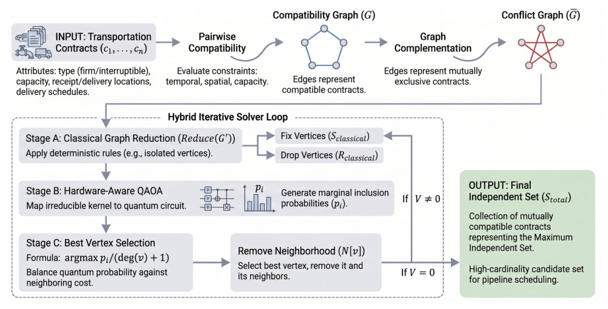
<figcaption class="paper-figure-caption"><b>Fig 1.</b> FIG. 1. Overview of the proposed hybrid quantum–classical workflow. Transportation contracts form a compatibility graph G, whose complement ¯G is solved as a Maximum Independent Set (MIS) instance. The hybrid solver then alternates between deterministic classical reduction, which fixes provably-optimal vertices, and hardware-aware QAOA, whose measured marginal probabilities pi rank the remaining vertices; the highest-scoring vertex is added to the independent set and its closed neigh- borhood N[v] is removed. The reduced graph re-enters the loop until no vertices remain, at which point the accumulated set Stotal, i.e., the constructed set of mutually compatible contracts, is returned.</figcaption>
</figure>
<figure class="paper-figure-card">
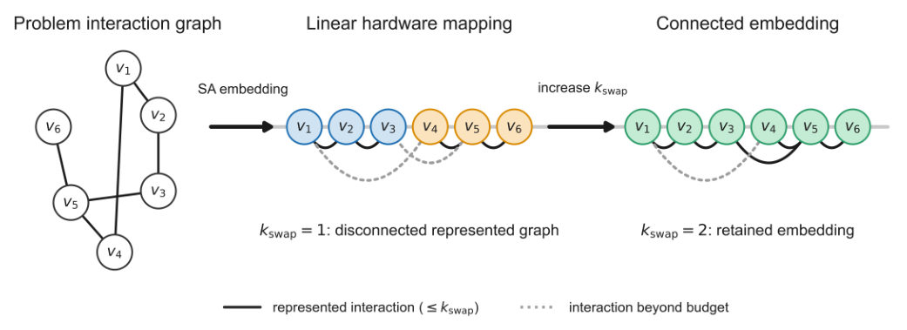
<figcaption class="paper-figure-caption"><b>Fig 2.</b> FIG. 2. Hardware-aware embedding of the problem interaction graph onto a linear qubit topology. The problem interaction graph (left) is mapped by a simulated-annealing heuristic onto a linear hardware-compatibility graph, in which two qubits interact only if they lie within the SWAP budget kswap. At a small budget (center) some interactions exceed the budget and the represented graph is disconnected; increasing kswap (right) yields a single connected component, and the smallest such budget is retained. Solid arcs denote interactions realizable within the budget; dashed arcs denote interactions beyond it. Among the seeds that achieve connectivity, the embedding with the smallest two-qubit...</figcaption>
</figure>
<figure class="paper-figure-card">
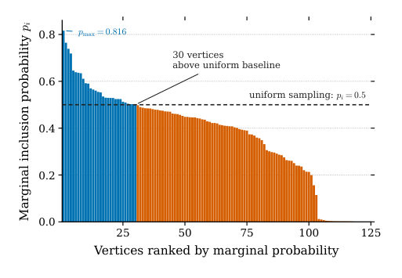
<figcaption class="paper-figure-caption"><b>Fig 3.</b> FIG. 3. QAOA marginal inclusion probabilities pi for the first reduction round of es60fst02 (124-vertex kernel), sorted in decreasing order. The dashed horizontal line marks the value pi = 0.5 expected from uniform random sampling; the 30 ver- tices lying above this baseline (blue) carry the selection sig- nal, with the largest marginal reaching pmax = 0.816. The non-uniform distribution of marginals provides the vertex- selection information exploited by the proposed reduction strategy.</figcaption>
</figure>
<figure class="paper-figure-card">
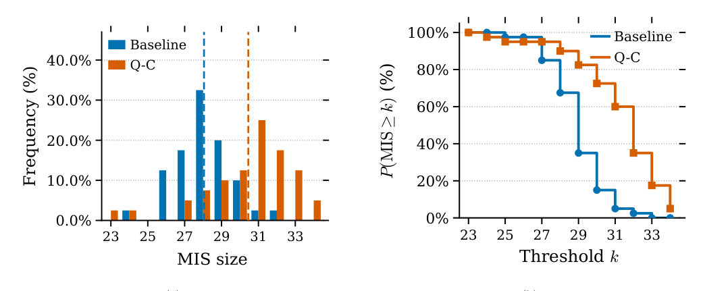
<figcaption class="paper-figure-caption"><b>Fig 4.</b> FIG. 4. Comparison of the uniform-random baseline (Baseline) and the hybrid quantum–classical (Q–C) solver on the distri- bution of maximum independent set (MIS) sizes for C125-9. (a) Histograms of the MIS sizes returned by the two methods over repeated runs; dashed vertical lines mark the respective mean MIS sizes. (b) Tail probability P(MIS ≥k)—the fraction of runs attaining an MIS of size at least k—as a function of the threshold k.</figcaption>
</figure>
<figure class="paper-figure-card">
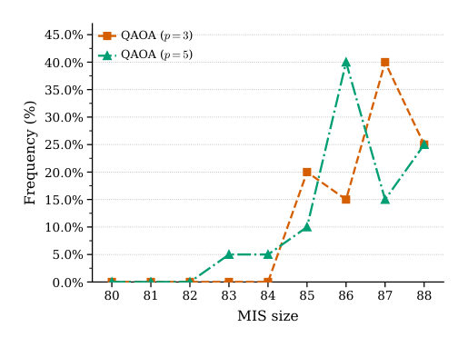
<figcaption class="paper-figure-caption"><b>Fig 5.</b> FIG. 5. Distribution of independent set (MIS) sizes found on instance es60fst02 by the QAOA-based solver at circuit depths p = 3 and p = 5 (N = 20 runs each). Frequencies are normalized within each configuration. The p = 3 distribution peaks at 87 (40% of runs) and the p = 5 distribution at 86 (40%), and both reach the CPLEX optimum of 88 in 25% of runs; neither places any mass below 85 (p = 3) or 83 (p = 5). The uniform-random baseline over the same instance, which never exceeds size 87, is tabulated in Table II.</figcaption>
</figure>
</div>

<p><strong>Summary.</strong> This work proposes a quantum-classical hybrid solver to tackle the computationally hard Maximum Independent Set (MIS) problem, using natural gas contract selection as an industrial motivation. The method iteratively simplifies the problem using classical graph theory before applying QAOA on the remaining kernel using current quantum hardware. It demonstrates that this hybrid approach effectively handles large, real-world graph structures.</p>
<p><strong>Why it may be interesting.</strong> The methodology of combining deterministic classical graph reduction with quantum optimization (QAOA) to tackle large, structured optimization problems is highly relevant for developing scalable quantum algorithms for complex physical constraints.</p>
<details>
<summary>Detailed structure</summary>
<p><strong>Main problem.</strong> The paper addresses the NP-complete problem of finding the Maximum Independent Set (MIS) on a graph, framed initially by selecting compatible natural gas transportation contracts.</p>
<p><strong>Main result.</strong> The developed quantum-classical hybrid solver achieved strong performance on benchmark instances, reporting an average approximation ratio of 0.996 on QOBLIB and successfully reducing industrially motivated graphs.</p>
<p><strong>Method.</strong> It employs a hybrid quantum-classical framework that combines iterative classical graph reduction techniques with quantum optimization using the Quantum Approximate Optimization Algorithm (QAOA).</p>
<p><strong>Model / system.</strong> The problem is formulated as an MIS problem, which is mapped to a Quadratic Unconstrained Binary Optimization (QUBO) model and subsequently to an Ising Hamiltonian for execution on NISQ quantum hardware.</p>
<p><strong>Key observables.</strong> Average approximation ratio (e.g., 0.996), ability to recover optimal solutions, and circuit metrics like two-qubit depth and CZ count.</p>
<p><strong>Important parameters / regimes.</strong> NISQ hardware constraints, graph sizes up to 900 contracts, and QAOA parameters ($p$, $k_{swap}$).</p>
<p><strong>Assumptions / limitations.</strong> The quantum workload is assumed to scale with qubit count rather than problem size, and the classical reduction process is guaranteed to preserve at least one maximum independent set.</p>
<p><strong>Figures summary.</strong> Figure 1 illustrates the overall hybrid quantum-classical workflow, showing the alternation between classical reduction and hardware-aware QAOA execution.</p>
<p><strong>Paper structure.</strong> The paper details the formulation of the MIS problem as a QUBO, describes the hybrid solver pipeline involving classical reduction rules and quantum optimization via QAOA, presents results on standard benchmarks (QOBLIB), and discusses hardware-aware circuit synthesis for superconducting processors.</p>
</details>
<details>
<summary>Abstract</summary>
<p>Selecting mutually compatible natural gas transportation contracts is a practically important optimization task in which operators must choose from many candidate agreements subject to temporal, infrastructural, and flow-related constraints. As the number of candidates grows, the resulting search space becomes difficult to explore exhaustively. We study a pairwise abstraction of this task, formulated as a Maximum Clique problem on a contract-compatibility graph, or equivalently as a Maximum Independent Set (MIS) problem on the complement graph.   Building on recent work, this paper studies a quantum-classical framework for solving large-scale MIS instances within the limitations of noisy quantum hardware. The approach combines iterative classical graph reduction with quantum-guided optimization to progressively simplify the search space while maintaining high solution quality. This enables large candidate spaces to be reduced to smaller subproblems that are more suitable for execution on current quantum computers.   We evaluate the approach on fifteen benchmark instances from the Quantum Optimization Benchmarking Library (QOBLIB), obtaining an average approximation ratio of 0.996 and recovering optimal solutions for fourteen instances, including graphs with up to 186 vertices. We further evaluate the algorithm on six synthetic pairwise contract-compatibility graphs containing up to 900 contracts, where the proposed method achieves an average approximation ratio of 0.989 and obtains optimal solutions in four cases. These experiments demonstrate the ability of the hybrid MIS solver to reduce industrially motivated graphs. The pairwise abstraction serves as the first step of a two-stage screening procedure that narrows the candidate contracts to a smaller set of mutually compatible ones, which can then be verified against pipeline-capacity constraints.</p>
</details>
<p><sub><a href="#top">↑ back to top</a></sub></p>

<p><a id="paper-2609.00372"></a></p>
<h3 id="towards-unsupervised-representation-learning-for-quantum-data-quantum-models-with-inference-and-generation"><a href="http://arxiv.org/abs/2609.00372v1">Towards unsupervised representation learning for quantum data: quantum models with inference and generation</a></h3>
<p><strong>Authors:</strong> Robin Lorenz, Eric Brunner, Marcello Benedetti<br>
<strong>Type:</strong> theory · <strong>Category:</strong> quantum information and computing · <strong>PDF:</strong> <a href="https://arxiv.org/pdf/2609.00372v1">https://arxiv.org/pdf/2609.00372v1</a><br>
<strong>Analysis basis:</strong> full PDF text, analyzed in chunks
<strong>Topic relevance:</strong> <code>quantum measurements</code> <strong>2/5</strong></p>
<div class="figure-strip-hint">↔ Scroll figures horizontally</div>
<div class="paper-figures-scroll">
<figure class="paper-figure-card">
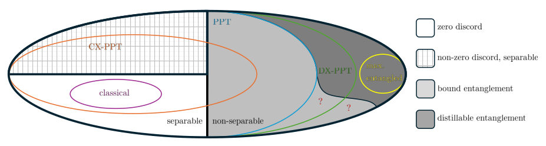
<figcaption class="paper-figure-caption"><b>Fig 1.</b> Figure 4: Schematic Venn diagram of how the sets CX-PPT, PPT and DX-PPT sit within the set of all states S(X ⊗Y); the question marks indicate which intersections are not known to definitely be (non-)empty; ‘classical’ denotes the subset of separable states that can be written as a convex combination of pairwise orthogonal pure product states.</figcaption>
</figure>
<figure class="paper-figure-card">

<figcaption class="paper-figure-caption"><b>Fig 2.</b> Figure 4 visualises the hierarchy of classes of states described above, including the open ques- tions concerning which intersections are (non-)empty. It seems interesting that LS-ambiguous states lie—in terms of the cardinality of the sets and the degree of entanglement—in between those based on OP and JP, both of which do not yield non-trivial models. With a view to quantum representation learning, it is natural to see the size of sets of ambiguous states and the correlations between X and Y they can describe, in particular the degree of entanglement they cover, as kinds of inductive biases one may choose accordingly, given a problem that quantum representation learning is to be applied...</figcaption>
</figure>
</div>

<p><strong>Summary.</strong> This paper establishes a rigorous mathematical framework for unsupervised representation learning when the data consists of quantum states rather than classical measurements. It addresses the fundamental challenge posed by the lack of a standard factorization rule for quantum states. The work characterizes the resulting 'ambiguous states' and shows that physically realizable quantum correlations are constrained by entanglement criteria like the PPT condition.</p>
<p><strong>Why it may be interesting.</strong> It provides a rigorous mathematical structure for applying modern ML techniques (like variational inference) to quantum data, which is crucial for developing quantum machine learning algorithms.</p>
<details>
<summary>Detailed structure</summary>
<p><strong>Main problem.</strong> The paper develops a mathematical framework to generalize unsupervised representation learning, concepts central to modern machine learning, to the quantum domain.</p>
<p><strong>Main result.</strong> It characterizes the necessary structure of quantum models with inference and generation, showing that non-trivial models must involve non-linear maps, and links the existence of such models to the Positive Partial Transpose (PPT) criterion.</p>
<p><strong>Method.</strong> The authors define quantum models using joint quantum states over visible and latent systems and employ State-over-Time (SOT) maps to generalize the factorization properties of classical probability distributions.</p>
<p><strong>Model / system.</strong> The system involves quantum states (density operators) defined over visible and latent subsystems, which are assumed to be finite-dimensional. The core mathematical tools are SOT maps and the concept of 'ambiguous states' arising from factorization constraints.</p>
<p><strong>Key observables.</strong> Ambiguous states, joint quantum states, and the positive-partial-transpose (PPT) criterion.</p>
<p><strong>Important parameters / regimes.</strong> The structure of the SOT maps (e.g., Leifer-Spekkens construction) and the resulting correlation type (e.g., PPT states).</p>
<p><strong>Assumptions / limitations.</strong> The framework assumes the existence of a suitable notion of factorisation (via SOT maps) to mimic the classical chain rule, and later proves that non-trivial models require non-linear maps.</p>
<p><strong>Figures summary.</strong> Figure 1 illustrates the generic setup of classical representation learning, showing the relationship between inference, generation, and the latent/visible spaces.</p>
<p><strong>Paper structure.</strong> The paper first contrasts the quantum challenge with classical ML, then develops the SOT map framework, analyzes specific SOT map types (Leifer-Spekkens, etc.), establishes a 'no-go' result requiring non-linearity, and finally characterizes ambiguous states in relation to PPT criteria.</p>
</details>
<details>
<summary>Abstract</summary>
<p>With quantum sensors, simulators and networks emerging, a future of quantum technology may produce quantum states as data---that is, coherently rather than as classical measurement records---thus motivating the study of suitable quantum generalisations of modern machine learning, including the automated, unsupervised extraction of useful representations. Two ingredients are central to the latter: inference, mapping observations to latent representations, and generation, mapping latent states back to synthetic data. Both are related to each other and to joint distributions for training models by the chain-rule of classical probability theory. The fact that quantum states however lack such universal, standard factorisation property thus poses a challenge. Here we develop a conceptual and mathematical framework for unsupervised representation learning from quantum data. Models are joint quantum states over visible and latent systems; state-over-time maps provide a notion of factorisation into a marginal state and inference (generation) channel; models with inference (generation) are ambiguous states---states for which such factorisation obtains---subject to a further consistency condition on extended inference maps as data extension. These stipulations are restrictive: we show that non-trivial models must feature non-linear such maps to the extended space. For three representative state-over-time maps, we completely characterise the ambiguous states, uncovering a hierarchy tied to the positive-partial-transpose (PPT) criterion from entanglement theory. Notably, the Leifer-Spekkens construction supports inference and generation exactly for model classes of PPT states, thus allowing genuinely quantum visible-latent correlations. We also formulate quantum counterparts of exact and approximate inference training, explore weaker notions of data extension and sketch a future research programme.</p>
</details>
<p><sub><a href="#top">↑ back to top</a></sub></p>

<p><a id="paper-2609.00849"></a></p>
<h3 id="optimizing-diffusion-limited-transport-with-applications-to-electrochemical-systems"><a href="http://arxiv.org/abs/2609.00849v1">Optimizing diffusion-limited transport, with applications to electrochemical systems</a></h3>
<p><strong>Authors:</strong> Manu Mannattil, L. Mahadevan<br>
<strong>Type:</strong> theory · <strong>Category:</strong> statistical mechanics · <strong>PDF:</strong> <a href="https://arxiv.org/pdf/2609.00849v1">https://arxiv.org/pdf/2609.00849v1</a><br>
<strong>Analysis basis:</strong> full PDF text, analyzed in chunks
<strong>Topic relevance:</strong> <code>Keldysh / 2PI / non-Gaussian methods</code> <strong>1/5</strong> · <code>analog quantum simulation</code> <strong>1/5</strong> · <code>correlated / nonlocal dissipation</code> <strong>1/5</strong> · <code>driven-dissipative phase transition</code> <strong>1/5</strong> · <code>methods for driven-dissipative</code> <strong>1/5</strong> · <code>non-equilibrium universality</code> <strong>1/5</strong> · <code>quantum measurements</code> <strong>1/5</strong></p>
<div class="figure-strip-hint">↔ Scroll figures horizontally</div>
<div class="paper-figures-scroll">
<figure class="paper-figure-card">
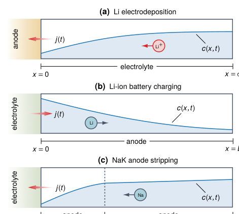
<figcaption class="paper-figure-caption"><b>Fig 1.</b> FIG. 1. Schematics of the diffusion problems considered in this paper. Each panel shows the domain, the direction of material transfer due to the applied current density j(t), a typical concentration profile c(x, t), and the diffusing species. The three cases are (a) Li electrodeposition (Sec. II), (b) Li-ion battery charging (Sec. III), and (c) NaK anode stripping (Sec. IV).</figcaption>
</figure>
<figure class="paper-figure-card">
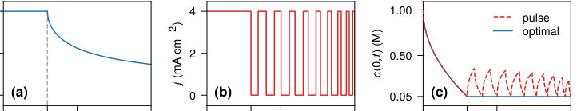
<figcaption class="paper-figure-caption"><b>Fig 2.</b> FIG. 2. (a) The current density in Eq. (2.15), for optimal Li electrodeposition using parameters relevant to the experiments in Ref. [14]. The initial electrolyte concentration is c0 = 1 M, the total deposition time is T = 1 h, and the maximum current density is j0 = 4 mA cm−2. The current initially takes the maximum (bang) value j0 and switches to the riding current jr(t) at t⋆≈0.3 h. (b) Pulse-width-modulated approximation of the optimal current density in (a) using 10 pulses. (c) Boundary concentration c(0, t) for the optimal current (solid) and its pulsed approximation (dashed). In both cases, the concentration stays above a fraction χ = 0.05 of its initial value.</figcaption>
</figure>
<figure class="paper-figure-card">
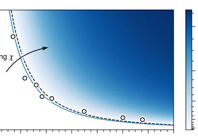
<figcaption class="paper-figure-caption"><b>Fig 3.</b> FIG. 3. Phase diagram in the (j0, T) plane showing the conditions under which optimal currents increase the total areal capacity beyond constant currents for Li electrodeposition, using parameters relevant to the experiments in Ref. [14]. Here, j0 denotes the maximum (bang) current density and T the total electrodeposition time. No capacity increase occurs unless T exceeds the switching time t⋆given in Eq. (2.11). For large j0, the capacity gain approaches its maximum value of 27%, as indicated by the shaded region. Sand’s time TS, Eq. (2.7), computed using a constant current density equal to j0, is indicated by the dashed curves. Optimal currents ensure safe electrodeposition even even...</figcaption>
</figure>
<figure class="paper-figure-card">
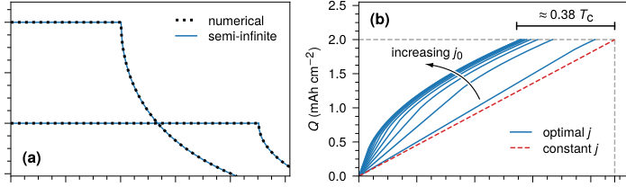
<figcaption class="paper-figure-caption"><b>Fig 4.</b> FIG. 4. (a) Optimal bang–ride current-density profiles for charging an anode to an areal capacity of 2 mAh cm−2 using parameters representative of a commercial Sony US18650S Li-ion battery [17]. Results are shown for maximum allowable current densities j0 = 2 mA cm−2 and j0 = 3 mA cm−2, comparing the numerical solutions with the semi-infinite approximations. (b) Areal capacity Q as a function of time during charging under the optimal protocols (blue curves) and the best constant-current protocol satisfying the boundary-concentration constraint (dashed red curve). The constant-current protocol uses a current density of jc ≈1.8 mA cm−2 and takes Tc ≈1.1 h to charge the anode to its maximum...</figcaption>
</figure>
<figure class="paper-figure-card">
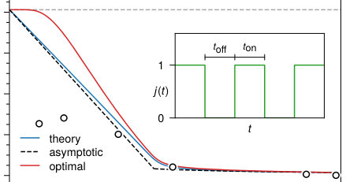
<figcaption class="paper-figure-caption"><b>Fig 5.</b> FIG. 5. Areal capacity Q as a function of the duty cycle δ = ton/(ton + toff) during pulsed stripping. The current-on duration is fixed at ton = 1 s, while the current-off duration toff is varied, with a maximum current density of j0 = 1 mA cm−2. The inset shows the pulsed current density profile j(t). For these pulses, the numerical value of the duty cycle δ equals the average current density ¯j = j0δ. The theoretical capacities (solid blue curves) were obtained using a double-layer anode model, and the corresponding asymptotic results (dashed black curves) using Eq. (4.7). Both use parameters relevant to the experimental NaK anodes of Ref. [25], which have a maximum areal capacity of...</figcaption>
</figure>
</div>

<p><strong>Summary.</strong> This work develops an optimal control strategy to maximize charge transfer in diffusion-limited electrochemical systems. By employing optimal control theory, the authors prove that the best strategy is a 'bang-ride' current profile, which significantly outperforms constant-current operation. This provides fundamental, geometry-independent upper bounds on achievable performance gains in energy storage devices.</p>
<p><strong>Why it may be interesting.</strong> While focused on electrochemistry, the mathematical framework of optimal control theory applied to diffusion-limited processes shares conceptual links with open quantum systems where external driving fields or dissipation rates must be optimized to maximize coherence or transfer.</p>
<details>
<summary>Detailed structure</summary>
<p><strong>Main problem.</strong> The paper aims to optimize material transport, specifically charge transfer in electrochemical systems, when the process is limited by the rate at which reactants can diffuse to the boundary.</p>
<p><strong>Main result.</strong> The optimal control protocol follows a 'bang-ride' structure, achieving a system-independent upper bound capacity gain of approximately 27% over the best constant-current operation.</p>
<p><strong>Method.</strong> Optimal control theory is applied to the diffusion equation, treating the current as the control variable to maximize transferred charge subject to a minimum boundary concentration constraint.</p>
<p><strong>Model / system.</strong> The model is based on the diffusion equation governing concentration $c(x, t)$ in semi-infinite or finite domains, applied to electrochemical systems like Li-ion batteries or NaK anode stripping.</p>
<p><strong>Key observables.</strong> Boundary concentration $c(0, t)$, Areal Capacity $Q$, and the optimal current profile $j(t)$.</p>
<p><strong>Important parameters / regimes.</strong> The critical boundary concentration threshold ($\chi c_0$), diffusion coefficient $D$, and the total time $T$.</p>
<p><strong>Assumptions / limitations.</strong> The analysis assumes the system is governed purely by diffusion limitation, neglecting kinetic, thermal, or degradation effects.</p>
<p><strong>Figures summary.</strong> Figures illustrate the optimal 'bang-ride' current profile and the corresponding boundary concentration evolution for various electrochemical setups (e.g., Li electrodeposition).</p>
<p><strong>Paper structure.</strong> The paper develops the mathematical framework using the diffusion equation, derives the optimal control problem, and solves it analytically for semi-infinite domains, extending the results to finite and multilayer systems.</p>
</details>
<details>
<summary>Abstract</summary>
<p>Transport in certain systems fails when diffusion cannot replenish or remove material from a boundary rapidly enough, causing the boundary concentration to reach a critical minimum or maximum. Motivated by experiments in electrochemical systems that demonstrate this diffusion-limited failure of charge transport, we determine dynamic current protocols that maximize charge transfer subject to a prescribed concentration constraint. The optimal protocol has a "bang-ride" structure: the maximum feasible current is used until the boundary concentration reaches its critical value, after which the current is progressively reduced to maintain that value. For semi-infinite domains, we derive the optimal currents analytically and obtain system-independent upper bounds on their improvement over constant-current operation. We also extend the framework to finite and multilayer domains and show that the same formulation applies to both charging and discharging.</p>
</details>
<p><sub><a href="#top">↑ back to top</a></sub></p>

<p><a id="paper-2609.00317"></a></p>
<h3 id="ghost-free-higher-gradient-newtonian-gravity-from-the-second-law-of-thermodynamics"><a href="http://arxiv.org/abs/2609.00317v1">Ghost-free higher-gradient Newtonian gravity from the Second Law of Thermodynamics</a></h3>
<p><strong>Authors:</strong> M. Pszota, P. Ván<br>
<strong>Type:</strong> theory · <strong>Category:</strong> statistical mechanics · <strong>PDF:</strong> <a href="https://arxiv.org/pdf/2609.00317v1">https://arxiv.org/pdf/2609.00317v1</a><br>
<strong>Analysis basis:</strong> full PDF text, analyzed in chunks
<strong>Topic relevance:</strong> <code>Keldysh / 2PI / non-Gaussian methods</code> <strong>1/5</strong> · <code>correlated / nonlocal dissipation</code> <strong>1/5</strong> · <code>driven-dissipative phase transition</code> <strong>1/5</strong> · <code>methods for driven-dissipative</code> <strong>1/5</strong> · <code>non-equilibrium universality</code> <strong>1/5</strong> · <code>quantum measurements</code> <strong>1/5</strong></p>
<div class="figure-strip-hint">↔ Scroll figures horizontally</div>
<div class="paper-figures-scroll">
<figure class="paper-figure-card">
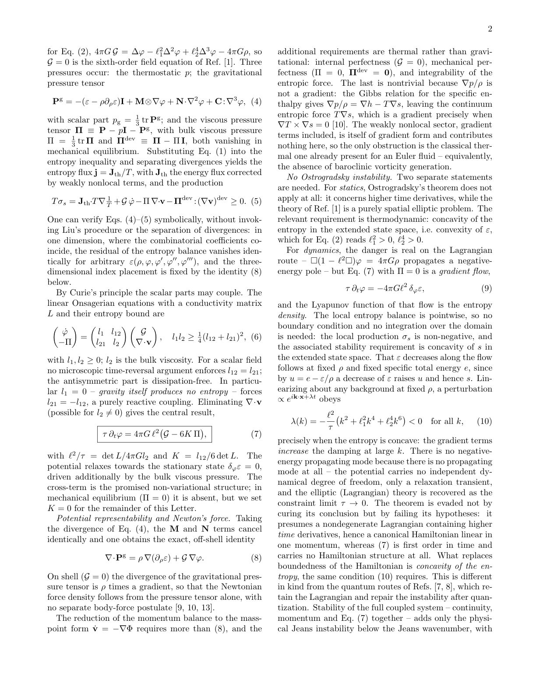
<figcaption class="paper-figure-caption"><b>Fig 1.</b> Low-resolution page preview, page 2</figcaption>
</figure>
<figure class="paper-figure-card">
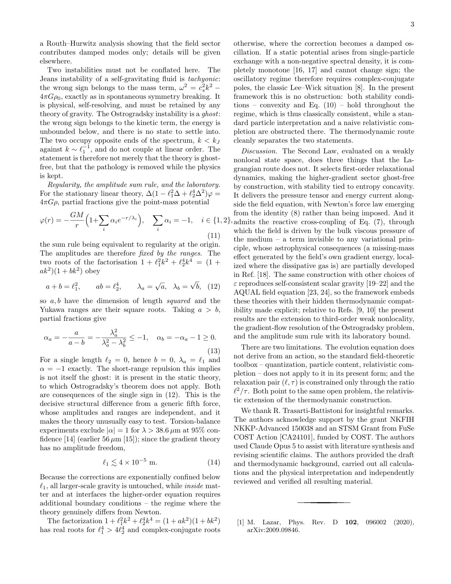
<figcaption class="paper-figure-caption"><b>Fig 2.</b> Low-resolution page preview, page 3</figcaption>
</figure>
<figure class="paper-figure-card">
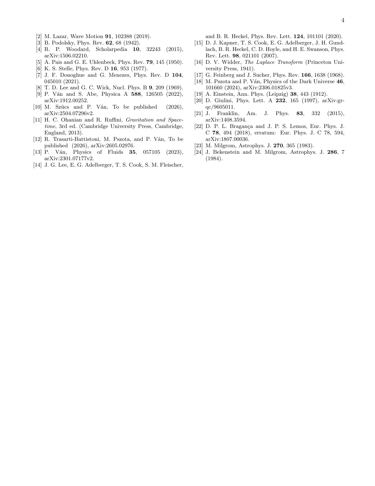
<figcaption class="paper-figure-caption"><b>Fig 3.</b> Low-resolution page preview, page 4</figcaption>
</figure>
</div>

<p><strong>Summary.</strong> This paper reformulates higher-gradient gravity by deriving its field equations from the Second Law of Thermodynamics applied to a self-gravitating fluid. This thermodynamic approach successfully bypasses the Ostrogradsky instability inherent in standard Lagrangian formulations. The resulting theory is ghost-free and provides novel physical identities, linking gravity to fundamental thermodynamic principles.</p>
<p><strong>Why it may be interesting.</strong> The use of entropy principles and gradient flow dynamics to stabilize a classical field theory is a powerful analogy to non-equilibrium statistical mechanics, which is central to understanding open quantum systems and dissipation.</p>
<details>
<summary>Detailed structure</summary>
<p><strong>Main problem.</strong> Higher-gradient modifications of Newtonian gravity, while removing point-mass singularities, suffer from the Ostrogradsky instability when treated via standard Lagrangian dynamics.</p>
<p><strong>Main result.</strong> The field equations can be derived from the Second Law of Thermodynamics applied to a self-gravitating fluid, yielding a ghost-free, first-order relaxation equation that naturally incorporates Newton's law and dissipation-free couplings.</p>
<p><strong>Method.</strong> The authors derive the field equations by treating the potential as a thermodynamic variable and enforcing the local entropy balance ($\sigma_s \ge 0$), leading to a gradient flow description.</p>
<p><strong>Model / system.</strong> The model is a modification of Newtonian gravity involving higher-gradient terms, analyzed through the lens of non-equilibrium thermodynamics applied to a self-gravitating fluid.</p>
<p><strong>Key observables.</strong> The energy current, pressure tensor, and the stability condition derived from the entropy density (concavity).</p>
<p><strong>Important parameters / regimes.</strong> The amplitude sum rule $\sum \alpha_i = -1$ constrains the internal length scale below $4 	imes 10^{-5}$ m.</p>
<p><strong>Assumptions / limitations.</strong> The derivation assumes the system is in mechanical equilibrium ($\Pi = 0$) for simplified results, and the dynamics are governed by a first-order relaxation equation rather than a standard action principle.</p>
<p><strong>Paper structure.</strong> The paper first identifies the instability issue in higher-gradient gravity. It then reformulates the dynamics using the Second Law of Thermodynamics, showing the resulting equations are equivalent to the stationary limit of a first-order relaxation equation. Finally, it analyzes the constraints imposed by this thermodynamic structure on the theory's parameters.</p>
</details>
<details>
<summary>Abstract</summary>
<p>Higher-gradient modifications of Newtonian gravity remove the point-mass singularity, but their Lagrangian dynamics is haunted by the Ostrogradsky instability. We show that the same field equations follow from the Second Law of thermodynamics applied to a self-gravitating fluid with a weakly nonlocal state space, and that on this route the instability is absent by construction: the potential obeys a first-order relaxation equation that is a gradient flow, whose Lyapunov function is the entropy density, and whose relaxation spectrum is negative definite at every wavenumber precisely when the entropy is concave. The derivation also yields the pressure tensor and the energy current, an exact identity that reproduces Newton's force law without further input, and a dissipation-free cross-coupling to the bulk viscous pressure that no variational principle can produce. Regularity constrains the Yukawa-type corrections by an amplitude sum rule, $\sum_iα_i=-1$, so that laboratory tests of the inverse-square law bound the largest internal length below $4\times10^{-5}$~m, and identify the complex-root regime as a classically consistent Lee--Wick-like sector.</p>
</details>
<p><sub><a href="#top">↑ back to top</a></sub></p>

<p><a id="paper-2609.00721"></a></p>
<h3 id="bkt-like-correlation-scaling-and-twist-responses-in-a-one-dimensional-fractional-math436math-ginzburg-landau-model"><a href="http://arxiv.org/abs/2609.00721v1">BKT-like Correlation Scaling and Twist Responses in a One-Dimensional Fractional $U(1)$ Ginzburg--Landau Model</a></h3>
<p><strong>Authors:</strong> Hitomi Endo, Michikazu Kobayashi<br>
<strong>Type:</strong> theory · <strong>Category:</strong> statistical mechanics · <strong>PDF:</strong> <a href="https://arxiv.org/pdf/2609.00721v1">https://arxiv.org/pdf/2609.00721v1</a><br>
<strong>Analysis basis:</strong> full PDF text, analyzed in chunks
<strong>Topic relevance:</strong> <code>Frenkel-Kontorova</code> <strong>1/5</strong> · <code>Keldysh / 2PI / non-Gaussian methods</code> <strong>1/5</strong> · <code>driven-dissipative phase transition</code> <strong>1/5</strong> · <code>methods for driven-dissipative</code> <strong>1/5</strong> · <code>non-equilibrium universality</code> <strong>1/5</strong></p>
<div class="figure-strip-hint">↔ Scroll figures horizontally</div>
<div class="paper-figures-scroll">
<figure class="paper-figure-card">
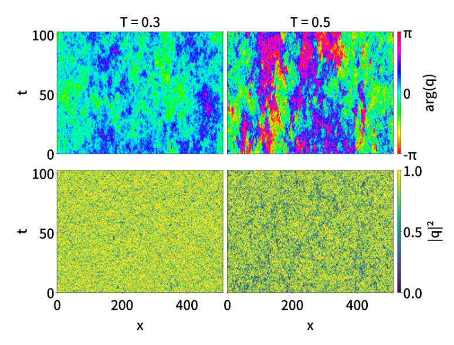
<figcaption class="paper-figure-caption"><b>Fig 1.</b> Figure 1: Typical space-time plots of the phase and density obtained from the stochastic Gross– Pitaevskii dynamics. The upper panels show arg q(x, t) modulo 2π, and the lower panels show |q(x, t)|2. The left column corresponds to T = 0.3, and the right column corresponds to T = 0.5. The low-temperature trajectory shows slowly varying phase textures, whereas the high-temperature trajectory exhibits stronger phase fluctuations. This supports the interpretation that the dominant change across the transition is associated with phase fluctuations rather than large-scale amplitude ordering.</figcaption>
</figure>
<figure class="paper-figure-card">
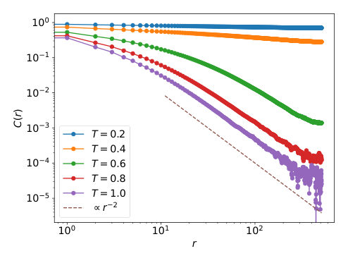
<figcaption class="paper-figure-caption"><b>Fig 2.</b> Figure 2: Correlation function C(r) with L = 1024 for several temperatures. At low temperatures, C(r) decays slowly and is consistent with an algebraic form. At high temperatures, C(r) decays rapidly at intermediate distances and becomes compatible with the fractional-kernel-induced algebraic tail C(r) ∼r−2 at long distances.</figcaption>
</figure>
<figure class="paper-figure-card">
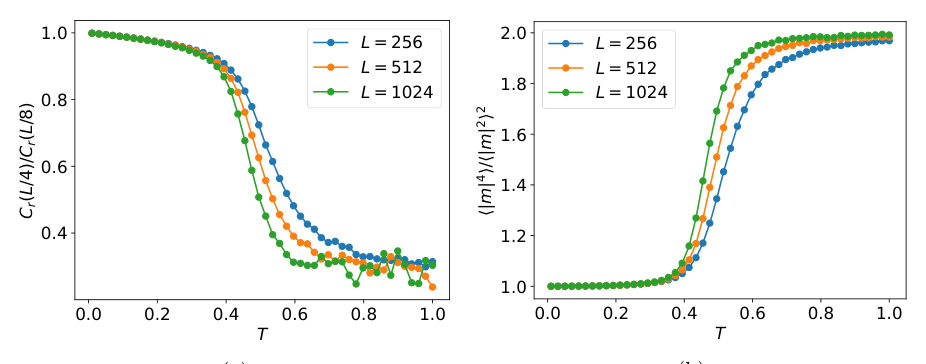
<figcaption class="paper-figure-caption"><b>Fig 3.</b> Figure 3: Temperature dependence of (a) the correlation ratio RC(L, T) = C(L/4)/C(L/8) and (b) the Binder ratio UL(T) = ⟨|m|4⟩/⟨|m|2⟩2 for L = 256, 512, 1024. Both quantities show weak size dependence in the low-temperature algebraic regime. The size dependence becomes pronounced near the transition region.</figcaption>
</figure>
<figure class="paper-figure-card">
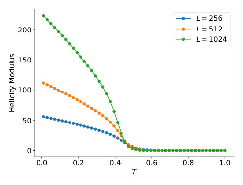
<figcaption class="paper-figure-caption"><b>Fig 4.</b> Figure 4: Helicity-modulus-like quantity obtained from the ordinary linear-response formula in Eq. (91). This quantity is defined by applying a Peierls-type twist to the real-space nonlocal representation of the fractional quadratic energy, thereby assuming an analytic δ2 response. In the low-temperature regime, the response grows strongly with system size and does not approach a finite size-independent value. This shows that the ordinary helicity modulus is not an appropriate finite stiffness for the σ = 1 fractional model.</figcaption>
</figure>
<figure class="paper-figure-card">
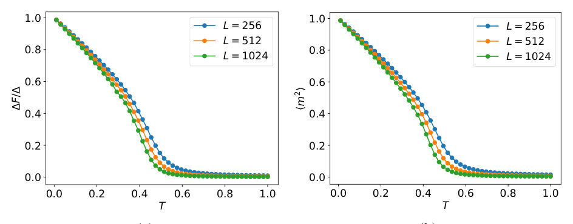
<figcaption class="paper-figure-caption"><b>Fig 5.</b> Figure 5: (a) Cusp twist response Ycusp(L, T) = ∆FL/|∆| computed with ∆= π/4, and (b) the squared order parameter ⟨|m|2⟩. Although Ycusp remains finite at each finite system size, it decreases with increasing L in the low-temperature regime. Its temperature and size dependence closely resemble those of ⟨|m|2⟩. Therefore, Ycusp does not behave as an independent stiffness analogous to the helicity modulus of the two-dimensional XY model.</figcaption>
</figure>
</div>

<p><strong>Summary.</strong> This paper analyzes a 1D fractional U(1) Ginzburg-Landau model to study its phase transition behavior. Using stochastic dynamics, the authors show that while the correlation scaling mimics the BKT transition, the system lacks the characteristic jump in the helicity modulus seen in 2D systems. This highlights how long-range interactions fundamentally alter the nature of phase transitions.</p>
<p><strong>Why it may be interesting.</strong> It provides a theoretical framework for understanding how long-range interactions (fractional Laplacian) modify classic critical phenomena like the BKT transition, offering insights applicable to systems with non-local dynamics.</p>
<details>
<summary>Detailed structure</summary>
<p><strong>Main problem.</strong> The study investigates the nature of phase transitions, specifically BKT-like correlation scaling, in a one-dimensional fractional U(1) Ginzburg-Landau model.</p>
<p><strong>Main result.</strong> The transition exhibits BKT-like behavior in correlation scaling, evidenced by finite-size scaling collapse, but it notably lacks the universal jump in the helicity modulus characteristic of the 2D XY model.</p>
<p><strong>Method.</strong> The authors employ stochastic Gross-Pitaevskii dynamics to sample the equilibrium Gibbs measure and analyze various correlation functions and twist responses.</p>
<p><strong>Model / system.</strong> The system is a one-dimensional complex field model governed by a fractional U(1) Ginzburg-Landau Hamiltonian, featuring a nonlocal quadratic term with Fourier multiplier |k|^sigma, focusing on the marginal case sigma=1.</p>
<p><strong>Key observables.</strong> Correlation function C(r), Binder ratios, effective exponents, and spectral twist responses.</p>
<p><strong>Important parameters / regimes.</strong> The critical exponent sigma, the temperature T, and the system size L, with a focus on the marginal case sigma=1.</p>
<p><strong>Assumptions / limitations.</strong> The analysis relies on defining a spectral twist response due to the nonlocal operator, and it contrasts its findings with the known universal jump of the 2D XY model.</p>
<p><strong>Figures summary.</strong> Not specified, but the analysis involves showing size-independent ratios at low T and collapse using a BKT-type variable.</p>
<p><strong>Paper structure.</strong> The paper defines the model and observables, describes the stochastic dynamics used for sampling, presents numerical results analyzing scaling, and concludes by interpreting the findings regarding the nature of the transition.</p>
</details>
<details>
<summary>Abstract</summary>
<p>We study a one-dimensional fractional $U(1)$ Ginzburg--Landau model whose quadratic part has Fourier multiplier $|k|^σ$, focusing on the marginal case $σ=1$. This dispersion yields logarithmic spin-wave fluctuations, suggesting BKT-like behavior despite the one-dimensional setting. We sample the equilibrium Gibbs measure using stochastic Gross--Pitaevskii dynamics and analyze correlation functions, dimensionless ratios, effective exponents, and twist responses. The correlation function shows a low-temperature algebraic branch with a temperature-dependent exponent, while the high-temperature regime exhibits a nonlocal-kernel-induced tail consistent with $C(r)\sim r^{-2}$. The correlation and Binder ratios are nearly size independent at low temperature and collapse with the BKT-type variable $(T-T_{\rm BKT})(\log L)^2$; finite-size effects set in around $T\simeq0.35\text{--}0.4$, consistent with $T_{\rm BKT}\simeq0.35$. Unlike the two-dimensional XY model, twist responses do not yield a finite helicity modulus: the ordinary linear-response quantity grows with system size, whereas the cusp twist response scales as $L^{-η(T)}$, like the squared zero-mode order parameter. Thus, the transition is BKT-like in correlation scaling, but lacks a universal helicity-modulus jump.</p>
</details>
<p><sub><a href="#top">↑ back to top</a></sub></p>

<p><a id="paper-2609.00168"></a></p>
<h3 id="entangling-capability-of-coherently-controlled-quantum-processes"><a href="http://arxiv.org/abs/2609.00168v1">Entangling capability of coherently controlled quantum processes</a></h3>
<p><strong>Authors:</strong> Beyza Aslanbaş, Bedirhan Alkan, Göktuğ Karpat<br>
<strong>Type:</strong> theory · <strong>Category:</strong> quantum information and computing · <strong>PDF:</strong> <a href="https://arxiv.org/pdf/2609.00168v1">https://arxiv.org/pdf/2609.00168v1</a><br>
<strong>Analysis basis:</strong> full PDF text, analyzed in chunks
<strong>Topic relevance:</strong> <code>correlated / nonlocal dissipation</code> <strong>1/5</strong> · <code>driven-dissipative phase transition</code> <strong>1/5</strong> · <code>methods for driven-dissipative</code> <strong>1/5</strong></p>
<div class="figure-strip-hint">↔ Scroll figures horizontally</div>
<div class="paper-figures-scroll">
<figure class="paper-figure-card">
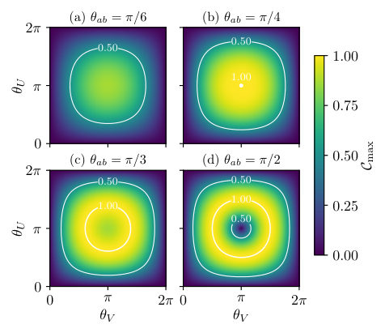
<figcaption class="paper-figure-caption"><b>Fig 1.</b> Figure 1. Density plots of the maximal concurrence for switch of two unitary channels, Cmax(U, V ), as a function of the rota- tion angles θU and θV for four different relative angles between the rotation axes. Here, the white point and curves highlight the contours on which the concurrence has constant value.</figcaption>
</figure>
<figure class="paper-figure-card">
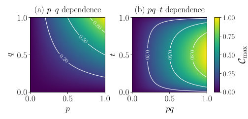
<figcaption class="paper-figure-caption"><b>Fig 2.</b> Figure 2. Density plots of the maximal concurrence generated via quantum switch of two binary random unitary channels. (a) Dependence of concurrence on the noise parameters p and q for t = 1/2 and (b) on the parameter pq and the unitary parameter t. The white contours indicate the parameter val- ues corresponding to Cmax = 0.20, 0.50, and 0.80.</figcaption>
</figure>
<figure class="paper-figure-card">
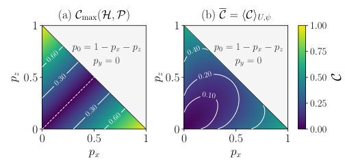
<figcaption class="paper-figure-caption"><b>Fig 3.</b> Figure 3. Density plots of the concurrence generated by the switch for the two-parameter family of Pauli channels P and a unitary channel. The physically valid parameter region sat- isfies px +pz ≤1 and px, pz ≥0. (a) Maximal concurrence for the Hadamard-Pauli switch. The dashed white line px = pz marks the nonentangling condition. (b) Haar-averaged con- currence for the switch of unitary and Pauli channels, with U and |ψ⟩sampled independently according to the Haar mea- sure and the control fixed to the maximally coherent state.</figcaption>
</figure>
<figure class="paper-figure-card">
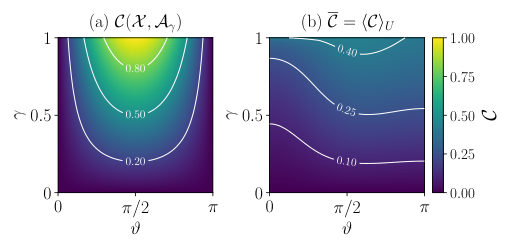
<figcaption class="paper-figure-caption"><b>Fig 4.</b> Figure 4. Density plots of the concurrence generated by the switch of the amplitude damping Aγ and unitary channels, for the maximally coherent control state and the real target input |ψ(ϑ)⟩= cos(ϑ/2) |0⟩+ sin(ϑ/2) |1⟩. (a) Concurrence for the quantum switch of bit-flip and amplitude damping channels. (b) Haar-averaged concurrence for the switch of unitary and amplitude damping channels, obtained by averaging over U while keeping the control and target fixed.</figcaption>
</figure>
<figure class="paper-figure-card">
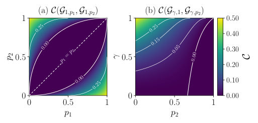
<figcaption class="paper-figure-caption"><b>Fig 5.</b> Figure 5. Density plots of the concurrence generated by the switch of two generalized amplitude damping channels, Gγ1,p1 and Gγ2,p2, for the product input |+⟩C |+⟩T . (a) Both chan- nels are fully relaxing, i.e., γ1 = γ2 = 1. The dashed diagonal marks p1 = p2, for which the channels commute under com- position and the switched output is separable. (b) The first stationary population is fixed at p1 = 1, while the channels have a common damping strength, γ1 = γ2 = γ. The thicker solid white curves are the C = 0 boundaries.</figcaption>
</figure>
</div>

<p><strong>Summary.</strong> This paper systematically analyzes the entanglement generated by coherently controlling quantum processes, specifically the quantum switch and the time-flip. By treating the control and target as a bipartite system, the authors derive conditions under which entanglement is generated, even when dissipation is present. The findings offer a deep, analytical understanding of how channel order and directionality can be harnessed to manipulate quantum correlations.</p>
<p><strong>Why it may be interesting.</strong> This work provides a rigorous, analytical framework for quantifying how entanglement can be engineered by controlling the order or direction of quantum operations, which is fundamental to quantum information processing.</p>
<details>
<summary>Detailed structure</summary>
<p><strong>Main problem.</strong> The paper aims to analytically characterize the entanglement generation capability of two key coherently controlled quantum processes: the quantum switch and the quantum time-flip.</p>
<p><strong>Main result.</strong> The entanglement generated depends critically on the coherence of the control process and the distinguishability of the ordered evolutions; maximal entanglement can persist even in the presence of dissipation.</p>
<p><strong>Method.</strong> The analysis involves treating the control and target as a bipartite system, deriving exact expressions for entanglement (concurrence) for unitary channels, and extending the analysis to various dissipative channels.</p>
<p><strong>Model / system.</strong> The model uses a bipartite system consisting of a control qubit and a target system, where processes are modeled by quantum channels (supermaps). The processes analyzed are the quantum switch (combining two channels) and the quantum time-flip (reversing input-output direction).</p>
<p><strong>Key observables.</strong> Entanglement (quantified by concurrence), coherence-entanglement conservation relation, and stationary states of damping channels.</p>
<p><strong>Important parameters / regimes.</strong> The distinguishability overlap parameter $s$, and the parameters governing the specific damping channels ($\gamma_1, \gamma_2, p_1, p_2$).</p>
<p><strong>Assumptions / limitations.</strong> The analysis assumes pure product inputs and crucially retains the control system rather than measuring or discarding it.</p>
<p><strong>Paper structure.</strong> The paper systematically analyzes the quantum switch first, deriving general principles and specific results for unitaries and dissipative channels, followed by an analogous study for the quantum time-flip.</p>
</details>
<details>
<summary>Abstract</summary>
<p>We analytically characterize entanglement generation by two paradigmatic coherently controlled quantum processes, the quantum switch and time-flip. Retaining rather than measuring or discarding the control, we treat the control and target as the bipartite system and assume pure product inputs, so that any output entanglement reflects the entangling capability of the process. For the switch of qubit unitaries, we derive exact expressions for entanglement, together with a geometric characterization and a coherence-entanglement conservation relation. We then extend our analysis to binary random unitary, Pauli, amplitude damping, and generalized amplitude damping channels. We prove that switch of channels commuting under composition cannot entangle a separable input. Yet maximal entanglement is possible even with dissipation, e.g., an entanglement-breaking damping channel switched with a bit-flip can transform a product input into a maximally entangled state. For two generalized amplitude damping channels, a common stationary state prevents entanglement, while different stationary populations can enable it. We present an analogous study for the time-flip of unitary and binary random unitary channels. Our findings provide a systematic analysis of how much entanglement can be generated by coherent control of channel order or input-output direction.</p>
</details>
<p><sub><a href="#top">↑ back to top</a></sub></p>

<p><a id="paper-2609.00964"></a></p>
<h3 id="resolving-unconventional-gap-structure-in-kagome-superconductors-with-hybrid-microwave-circuits"><a href="http://arxiv.org/abs/2609.00964v1">Resolving unconventional gap structure in kagome superconductors with hybrid microwave circuits</a></h3>
<p><strong>Authors:</strong> Yejin Lee, Haolin Jin, Sushmita Chandra, Berit H. Goodge, Edouard Lesne, Tommaso Confalone, Francesco Tafuri, Davide Massarotti, Golam Haider, Kornelius Nielsch, Bernd Büchner, Claudia Felser, Debanjan Chowdhury, Nicola Poccia, Uri Vool<br>
<strong>Type:</strong> experiment · <strong>Category:</strong> strongly correlated electrons · <strong>PDF:</strong> <a href="https://arxiv.org/pdf/2609.00964v1">https://arxiv.org/pdf/2609.00964v1</a><br>
<strong>Analysis basis:</strong> full PDF text, analyzed in chunks
<strong>Topic relevance:</strong> <code>correlated / nonlocal dissipation</code> <strong>1/5</strong> · <code>methods for driven-dissipative</code> <strong>1/5</strong> · <code>quantum measurements</code> <strong>1/5</strong></p>
<div class="figure-strip-hint">↔ Scroll figures horizontally</div>
<div class="paper-figures-scroll">
<figure class="paper-figure-card">
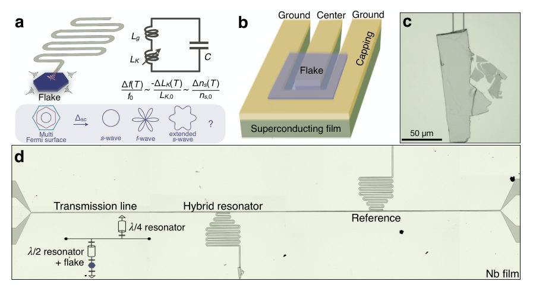
<figcaption class="paper-figure-caption"><b>Fig 1.</b> FIG. 1. Hybrid microwave resonator device configuration. (a) Schematics for a hybrid microwave resonator coupled to a superconducting flake forming an effective LC oscillator. Kinetic inductance change manifests shifts in the resonance frequency, reflecting superfluid density response. Representative superconducting gap structures proposed for a kagome superconductor, including fully gapped, nodal and extended s-wave states, are illustrated. (b) Three-dimensional layout for the hybrid microwave device where a superconducting film is patterned into a coplanar design. A van der Waals (vdW) flake is placed between the center line and ground plane, on a surface capping layer grown on the...</figcaption>
</figure>
<figure class="paper-figure-card">
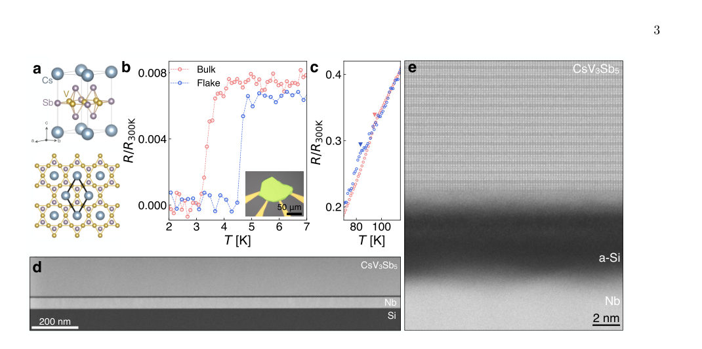
<figcaption class="paper-figure-caption"><b>Fig 2.</b> FIG. 2. Superconductivity in CsV3Sb5 and device interface. (a) Crystal structure of CsV3Sb5 on the three dimensional plane and ab plane, respectively. (b) Resistance as a function of temperature of the CsV3Sb5 bulk crystal and the exfoliated 480 nm-thick flake, marked in red and blue, respectively. Inset: Optical micrograph of the flake transferred on the gold electrodes. (c) Resistance vs. temperature measurements for the same devices in (b) at higher temperatures, indicating a charge density wave anomaly around 90 K. (d) Scanning transmission electron microscopic (STEM) image for the cross section of a prepared flake on the niobium film. (e) Closeup of the interface between the film and...</figcaption>
</figure>
<figure class="paper-figure-card">
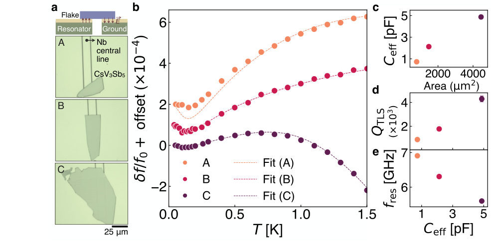
<figcaption class="paper-figure-caption"><b>Fig 3.</b> FIG. 3. Resonance frequency shift for devices of varying flake geometry. (a) Optical micrograph of different hybrid devices (A-C) where a CsV3Sb5 flake is integrated into the niobium resonator film. The top schematic shows a cross-sectional view of the device, displaying the flake is in partial contact with the central line and the ground across the isolation gap with the displacement field. The contact area of the flake on the resonator is increased from device A to C. (b) Temperature dependent resonance frequency shift for all devices, with the offset for visualization. The dashed line shows a model with the contribution from both a standard quasiparticle and two-level system bath...</figcaption>
</figure>
<figure class="paper-figure-card">
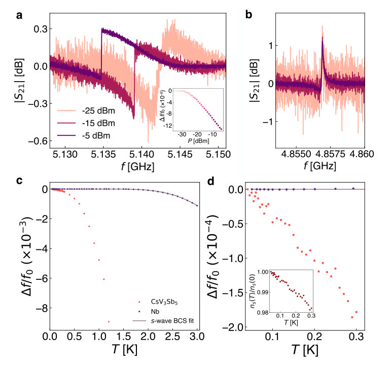
<figcaption class="paper-figure-caption"><b>Fig 4.</b> FIG. 4. Temperature dependent resonance frequency in hybrid device. (a) Microwave transmission S21 for the hybrid device, shown in Fig. 1c,d, measured at 50 mK under three different applied input powers and (b) the reference niobium resonator with λ/4 termination. Inset of (a): the input power dependent frequency shift for the hybrid device. (c) The temperature dependence of the resonance frequency shift for the hybrid device and the niobium resonator with a model for a isotropic gap. (d) Zoom in for the temperature dependent resonance frequency shift at low temperatures. Inset of (d): Extracted relative superfluid density versus temperature of the corresponding hybrid device.</figcaption>
</figure>
</div>

<p><strong>Summary.</strong> This work develops a novel, noninvasive technique using superconducting microwave resonators to measure the electrodynamic response of fragile kagome superconductors. By analyzing the temperature-dependent shift in the resonance frequency, the authors successfully extracted the superfluid density, finding linear low-temperature behavior indicative of a nodal superconducting gap.</p>
<p><strong>Why it may be interesting.</strong> The use of microwave circuits to probe superconducting properties provides an excellent analogy for studying dissipation and gap structure in mesoscopic quantum systems, linking superconducting physics to circuit QED concepts.</p>
<details>
<summary>Detailed structure</summary>
<p><strong>Main problem.</strong> The primary goal is to determine the superconducting pairing symmetry (gap structure) of unconventional superconductors, specifically in kagome superconductors, which is crucial for understanding their microscopic pairing mechanism.</p>
<p><strong>Main result.</strong> The superfluid density exhibits linear temperature dependence at low temperatures, which is a strong indicator of a nodal gap structure in the superconductor.</p>
<p><strong>Method.</strong> The study uses superconducting microwave resonators to noninvasively probe the electrodynamic response of fragile, thin superconducting flakes integrated into hybrid microwave circuits.</p>
<p><strong>Model / system.</strong> The physical system is a layered van der Waals kagome superconductor ($ ext{CsV}_3  ext{Sb}_5$) flake coupled into a microwave resonator. The analysis models the resonance frequency shift based on the flake's kinetic inductance, which is proportional to the superfluid density ($n_s$).</p>
<p><strong>Key observables.</strong> Temperature-dependent resonance frequency shifts ($\Delta f/f_0$), superfluid density ($n_s(T)$), and the quality factor ($Q$).</p>
<p><strong>Important parameters / regimes.</strong> Low-temperature linear dependence of $n_s(T)$, and the ability to suppress parasitic losses from two-level systems (TLS).</p>
<p><strong>Assumptions / limitations.</strong> The method assumes that the frequency shift is dominated by the intrinsic superfluid response, and that parasitic TLS losses can be modeled and subtracted.</p>
<p><strong>Figures summary.</strong> Figures illustrate the hybrid microwave resonator device architecture, the crystal structure of $  ext{CsV}_3  ext{Sb}_5$, and the temperature dependence of resistance and frequency shifts.</p>
<p><strong>Paper structure.</strong> The paper progresses from establishing the difficulty of probing gap structure in 2D materials to introducing the microwave resonator platform. It details the noninvasive coupling technique, analyzes the frequency shift by separating quasiparticle and TLS contributions, and concludes by extracting the low-temperature $n_s(T)$ to infer the nodal gap structure.</p>
</details>
<details>
<summary>Abstract</summary>
<p>Unconventional superconductivity is a hallmark of exotic quantum matter, where determining the pairing symmetry is essential for uncovering its microscopic origin. Kagome superconductors provide a fertile landscape for emergent phenomena arising from strong electronic correlations and nontrivial band topology, yet their superconducting pairing symmetry remains elusive. The superconducting gap structure is commonly probed via electrodynamic response, but such measurements are inapplicable to thin flakes due to their small volume and delicate nature. Superconducting microwave resonators offer a coherent and highly sensitive platform for probing electrodynamic responses, with versatile designs that enable incorporation of diverse materials and geometries. Here, we integrate flakes into microwave circuits, enabling noninvasive access to the superfluid response through contactless coupling that preserves structural integrity. By engineering the device geometry to suppress parasitic two-level-system losses that dominate dissipation in microwave circuits, we isolate the intrinsic material response. Remarkably, the temperature-dependent superfluid density exhibits linear behavior at low temperatures, consistent with a nodal gap structure. Our approach establishes a noninvasive platform for probing electrodynamic response of fragile superconducting flakes while advancing hybrid microwave architectures for quantum technologies.</p>
</details>
<p><sub><a href="#top">↑ back to top</a></sub></p>

<p><a id="paper-2609.00321"></a></p>
<h3 id="which-otto-engine-is-the-fastest"><a href="http://arxiv.org/abs/2609.00321v1">Which Otto Engine Is the Fastest?</a></h3>
<p><strong>Authors:</strong> Idriss Hank Nkouatchoua Ngueya, Marcin Łobejko<br>
<strong>Type:</strong> theory · <strong>Category:</strong> statistical mechanics · <strong>PDF:</strong> <a href="https://arxiv.org/pdf/2609.00321v1">https://arxiv.org/pdf/2609.00321v1</a><br>
<strong>Analysis basis:</strong> full PDF text, analyzed in chunks
<strong>Topic relevance:</strong> <code>driven-dissipative phase transition</code> <strong>1/5</strong> · <code>methods for driven-dissipative</code> <strong>1/5</strong> · <code>non-equilibrium universality</code> <strong>1/5</strong></p>
<div class="figure-strip-hint">↔ Scroll figures horizontally</div>
<div class="paper-figures-scroll">
<figure class="paper-figure-card">
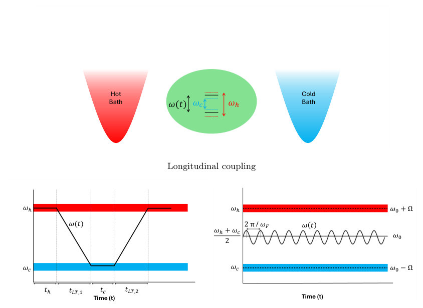
<figcaption class="paper-figure-caption"><b>Fig 1.</b> Figure 1: The figures illustrate a quantum Otto engine based on a single qubit serving as the working medium and subject to an external time-dependent drive. Panel (a) depicts the conventional four-stroke realization, where the qubit frequency is modulated between two values through a sequence of expansion and compression strokes. In this case, the frequency varies linearly within each stroke. Panel (b) presents a Floquet-inspired realization in which the qubit frequency undergoes a continuous periodic modulation, with a driving period shorter than the characteristic relaxation timescale of the system.</figcaption>
</figure>
<figure class="paper-figure-card">
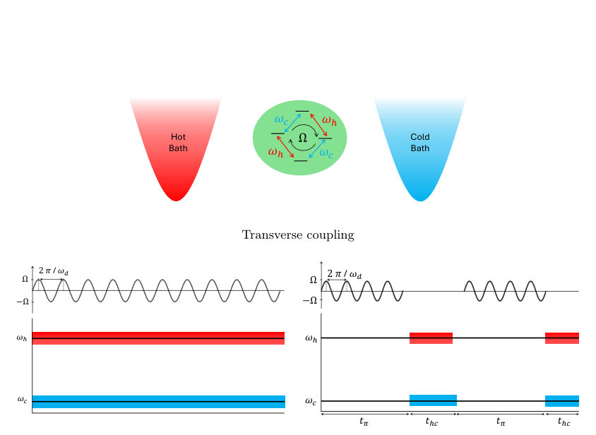
<figcaption class="paper-figure-caption"><b>Fig 2.</b> Figure 2: The figures above illustrate a quantum Otto engine based on two interacting qubits serving as the working medium and coupled to independent hot and cold thermal reservoirs. The qubits interact through an externally controlled transverse coupling. Panel (a) depicts the always-on realization, where the coupling remains active throughout the operation and the qubit frequencies undergo continuous periodic modulation. Panel (b) presents the on-off realization, in which the interaction is periodically switched on and off, generating a sequence of discrete work strokes separated by thermalization stages.</figcaption>
</figure>
<figure class="paper-figure-card">
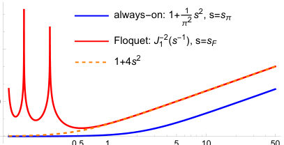
<figcaption class="paper-figure-caption"><b>Fig 3.</b> Figure 3: Normalized characteristic operational times for the always-on and Floquet implementations as functions of their respective dimensionless control parameters. The blue curve shows the always-on result, S∗ always−on = 1 + s2 π/π2, while the red curve shows S∗ Floquet = J−2 1 (s−1 F ). The orange dashed line denotes the large-sF Floquet asymptote 1 + 4s2 F . The nonmonotonic behavior and divergences of the Floquet curve at small sF are discussed in the main text. Since sπ and sF have different physical definitions, the figure compares their scaling behavior rather than their performance at fixed experimental resources.</figcaption>
</figure>
<figure class="paper-figure-card">
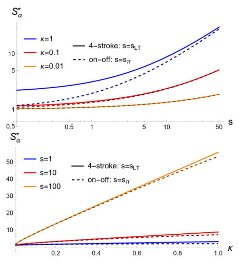
<figcaption class="paper-figure-caption"><b>Fig 4.</b> Figure 4: Optimized normalized characteristic operational times of the four-stroke (solid curves) and on-off (dashed curves) implementations. The upper panel shows their dependence on the model-specific operation parameter for κ = 1, 0.1, and 0.01. The lower panel shows their dependence on the relaxation-time asymmetry κ for fixed operation parameters s = 1, 10, and 100. Here κ = 1 corresponds to equal relaxation times, whereas κ →0 denotes the strongly asymmetric limit. Both implementations exhibit asymptotically linear growth with leading slope κ/2.</figcaption>
</figure>
<figure class="paper-figure-card">
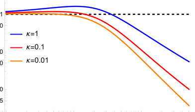
<figcaption class="paper-figure-caption"><b>Fig 5.</b> Figure 5: Ratio R = S∗ on−off(sπ, κ)/S∗ always−on(sπ) as a function of the common operation parameter sπ for different values of the relaxation-time asymmetry κ. The line R = 1 (dashed) separates the regimes in which the always-on (R &gt; 1) and on-off (R &lt; 1) implementations have the shorter characteristic operational time.</figcaption>
</figure>
</div>

<p><strong>Summary.</strong> This paper develops a general theory to compare the performance of various quantum Otto engines by factoring the power into a work term and an implementation-specific time scale. It demonstrates that the maximum operating speed is fundamentally limited by the thermalization times of the hot and cold baths, regardless of the specific cycle used.</p>
<p><strong>Why it may be interesting.</strong> This work provides a powerful, general framework for comparing non-equilibrium quantum processes, showing how fundamental thermodynamic limits constrain the speed achievable by different physical implementations.</p>
<details>
<summary>Detailed structure</summary>
<p><strong>Main problem.</strong> The paper aims to systematically compare the operational speed (power output) of different quantum realizations of the Otto engine, despite them achieving the same thermodynamic efficiency.</p>
<p><strong>Main result.</strong> The power of any quantum Otto engine can be factorized into a characteristic work (dependent on internal frequencies) and an implementation-specific characteristic time. The maximum speed is universally limited by the sum of the hot and cold bath thermalization times.</p>
<p><strong>Method.</strong> The analysis uses a factorization approach ($P = W/T^*$) to separate thermodynamic and dynamical aspects, comparing four distinct dynamical realizations (e.g., four-stroke, always-on, Floquet-modulated).</p>
<p><strong>Model / system.</strong> The system is a quantum heat engine, modeled using qubits coupled to thermal baths, analyzed via master equations and Hamiltonian dynamics for various cycle implementations.</p>
<p><strong>Key observables.</strong> Power output ($P$), characteristic work ($W$), characteristic time ($T^*$), and efficiency ($\eta$).</p>
<p><strong>Important parameters / regimes.</strong> Coupling strengths ($   au, \Omega$), internal frequencies ($\omega$), and dimensionless ratios characterizing the cycle dynamics ($s_{LT}, s_F, s_\pi$).</p>
<p><strong>Assumptions / limitations.</strong> The core assumption is the factorization $P = W/T^*$, allowing the comparison to focus solely on the characteristic time $T^*$. Various approximations are used depending on the cycle (e.g., slow modulation, fast oscillation limit).</p>
<p><strong>Figures summary.</strong> Figures illustrate the four-stroke model and the Floquet-inspired model for a single qubit, and the two-qubit realization, comparing power scaling in different regimes.</p>
<p><strong>Paper structure.</strong> The paper establishes the general framework by factorizing power, then analyzes specific dynamical realizations (four-stroke, Floquet, always-on, on-off) by deriving their respective characteristic times and asymptotic scaling laws.</p>
</details>
<details>
<summary>Abstract</summary>
<p>A general thermal machine is characterized by distinct time or energy scales: temperature, coupling to the heat baths, internal free dynamics and interactions, and external driving. We address the question: what parameters determine the speed of a given engine, and how can they be used to reliably compare different types of engine? Specifically, we consider four realizations of the Otto engine, each operating with the same Otto efficiency, and aim to characterize and compare their power outputs. The main insight of this paper is that, irrespective of their very different dynamical implementations, the power of each engine can be factorized into a common characteristic work and an implementation-specific characteristic time. The characteristic work depends only on the internal frequencies of the machine and the temperatures, whereas the characteristic time depends on the coupling strength to the baths and on the implementation-specific driving. This observation allows us to compare the power of different engines through their characteristic times and thereby reduce the relevant parameter space to parameters that capture the dynamical aspects of engine performance. Despite different dynamical implementations, this framework reveals simple common features. In all cases, the maximum operating speed is limited by a common timescale given by the sum of the characteristic thermalization times of the hot and cold baths. Moreover, the four engines fall into two distinct asymptotic classes: implementations in which driving and thermalization occur simultaneously exhibit quadratic scaling, whereas those in which work extraction and thermalization alternate exhibit linear scaling. These results expose general dynamical features that determine the operational speed of quantum Otto engines.</p>
</details>
<p><sub><a href="#top">↑ back to top</a></sub></p>

<p><a id="paper-2609.00322"></a></p>
<h3 id="a-human-ai-theorem-connecting-spontaneous-and-field-induced-mechanisms-of-collective-behavior-in-one-dimension"><a href="http://arxiv.org/abs/2609.00322v1">A Human-AI Theorem Connecting Spontaneous and Field-Induced Mechanisms of Collective Behavior in One Dimension</a></h3>
<p><strong>Authors:</strong> Weiguo Yin<br>
<strong>Type:</strong> theory · <strong>Category:</strong> statistical mechanics · <strong>PDF:</strong> <a href="https://arxiv.org/pdf/2609.00322v1">https://arxiv.org/pdf/2609.00322v1</a><br>
<strong>Analysis basis:</strong> full PDF text, analyzed in chunks
<strong>Topic relevance:</strong> <code>Frenkel-Kontorova</code> <strong>1/5</strong> · <code>analog quantum simulation</code> <strong>1/5</strong></p>
<div class="figure-strip-hint">↔ Scroll figures horizontally</div>
<div class="paper-figures-scroll">
<figure class="paper-figure-card">
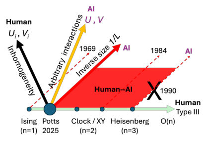
<figcaption class="paper-figure-caption"><b>Fig 1.</b> FIG. 1. Illustration of a human–AI research developed from a single point (big blue dot [1]) to a four-axis AHS: The green axis stands for model choice, red for inverse system size 1/L, and orange for homogeneous arbitrary interactions U(x), V (x), and black for inhomogeneous Ui(x), Vi(x). The main driver of different subspaces is indicated as Human or AI. Human–AI means that they drove the n −L subspace together. The initial AHS is represented by the green arrow and marked as Type III. The 1969 and 1984 red dashed lines stand for the microscopic proofs for the Ising and XY models, respectively [26, 27]. X denotes the 1990 obstruction [28].</figcaption>
</figure>
<figure class="paper-figure-card">
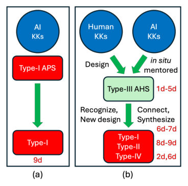
<figcaption class="paper-figure-caption"><b>Fig 2.</b> FIG. 2. Schematics of (a) a 9d one-shot autonomous Type-I route vs (b) the human-AI co-development approach, where the research state, active context, and the agents’ roles are progressively updated as the research evolves from an initial Type-III AHS towards Type-I/II/IV breakthroughs. Both ap- proaches start with intelligence equipped with known knowns (KKs).</figcaption>
</figure>
<figure class="paper-figure-card">
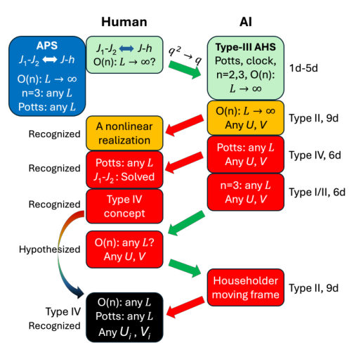
<figcaption class="paper-figure-caption"><b>Fig 3.</b> FIG. 3. Schematics of human–AI co-development trajectory through four AHS stages represented by green, orange, red, and black rounded rectangles (RRs). The color scheme is the same as Fig. 1: Green stands for the human-designed ini- tial Type-III AHS with the starting point being the q2 →q transfer-matrix reduction for the Potts chain, orange/red the AI-driven discovery space beyond the initial AHS (in which the human updated the AHS following the AI results), and black the final AHS for inhomogeneity. Blue RR denotes the human’s initial APS, from which only one problem was ex- posed to the initial AHS, but the AI autonomously identified and solved two other problems (first two red RRs on...</figcaption>
</figure>
</div>

<p><strong>Summary.</strong> This paper proves a general theorem connecting two distinct ways collective behavior can emerge in 1D spin chains: spontaneously via competing interactions, and externally via a field. It establishes an exact, Hamiltonian-level mapping between complex range-two interactions and simpler range-one interactions for both continuous and discrete spin systems. The work also frames this discovery within a novel model of human-AI scientific collaboration.</p>
<p><strong>Why it may be interesting.</strong> The rigorous mathematical mapping provides a powerful tool for solving complex 1D lattice models, which is foundational knowledge for understanding quantum many-body systems and their classical limits.</p>
<details>
<summary>Detailed structure</summary>
<p><strong>Main problem.</strong> The paper aims to connect two fundamental mechanisms of collective behavior in statistical physics: those arising spontaneously from competing interactions (zero field) and those controlled by an external field.</p>
<p><strong>Main result.</strong> A theorem is proven establishing a microscopic, temperature-independent mapping between a range-two Hamiltonian (with nearest and next-nearest neighbor interactions) and a simpler range-one Hamiltonian (with nearest-neighbor and single-spin potential).</p>
<p><strong>Method.</strong> The mapping is established using exact mathematical techniques, including a recursive Householder moving frame construction for continuous spins and kinematic identities for the Potts model.</p>
<p><strong>Model / system.</strong> The models are one-dimensional open chains of classical spins, including $O(n)$-vector spins (Ising, XY, Heisenberg) and the $q$-state Potts model. The Hamiltonians involve arbitrary inhomogeneous nearest-neighbor and next-nearest-neighbor interactions.</p>
<p><strong>Key observables.</strong> The partition function ($Z$) and the equivalence between the two Hamiltonian forms.</p>
<p><strong>Important parameters / regimes.</strong> The dimensionality $n$ (for $O(n)$ spins), the number of states $q$ (for Potts spins), and the system size $L$.</p>
<p><strong>Assumptions / limitations.</strong> The mapping is shown to hold for arbitrary inhomogeneous interactions and finite system sizes, overcoming previous limitations in the thermodynamic limit.</p>
<p><strong>Figures summary.</strong> Figure 1 illustrates the research trajectory, showing the progression from an initial Active Hypothesis Space (AHS) to a broader space driven by Human-AI collaboration.</p>
<p><strong>Paper structure.</strong> The paper develops the theoretical framework by first defining the two Hamiltonian forms, then proving the exact mapping for both continuous $O(n)$ spins and discrete $q$-state Potts spins, and finally framing the discovery process within a human-AI collaboration model.</p>
</details>
<details>
<summary>Abstract</summary>
<p>Can an artificial intelligence (AI) generate a scientific hypothesis outside a human collaborator's active hypothesis space (AHS), and can human-AI research be organized to make such breakthroughs more likely? We document such a case while proving a theorem that connects two basic organizing mechanisms of statistical physics: collective behavior arising in zero field from competing interactions and that induced or controlled by an external field. A zero-field $O(n)$-vector open chain with arbitrary inhomogeneous nearest- and next-nearest-neighbor interaction functions $U_i(S_i\cdot{S}_{i+1})$ and $V_i(S_i\cdot{S}_{i+2})$ is microscopically, via a temperature-independent mapping at the Hamiltonian level, equivalent to a simpler $O(n)$ open chain with nearest-neighbor interaction $V_i( σ_i\cdot σ_{i+1})$ and axial single-spin potential $U_i(σ_i^z)$ for every integer $n\ge1$ and every system size $L\ge1$. The homogeneous linear specialization maps the foundational frustrated $J_1$-$J_2$ model onto the canonical $J$-$h$ field model---with $n=1,2,3$ being the Ising, XY, and Heisenberg classical spin models, respectively. An analogous theorem holds when the continuous $O(n)$ spins are replaced by the $q$-state Potts spins with the standard Potts interaction, implying a closed-form exact solution of the $J_1$-$J_2$ Potts open chain for every $q\ge2$ and every $L\ge1$. The emergence of the theorems from sustained human-AI collaboration suggests that involving AI throughout a systematic research program may incubate autonomous scientific breakthroughs.</p>
</details>
<p><sub><a href="#top">↑ back to top</a></sub></p>

<p><a id="paper-2609.01278"></a></p>
<h3 id="an-exact-and-fast-solution-of-the-inverse-regularized-optimal-transport-problem"><a href="http://arxiv.org/abs/2609.01278v1">An exact and fast solution of the inverse Regularized Optimal Transport problem</a></h3>
<p><strong>Authors:</strong> Dario Mazzilli, Riccardo Piombo, Lorenzo Buffa, Aurelio Patelli<br>
<strong>Type:</strong> theory · <strong>Category:</strong> statistical mechanics · <strong>PDF:</strong> <a href="https://arxiv.org/pdf/2609.01278v1">https://arxiv.org/pdf/2609.01278v1</a><br>
<strong>Analysis basis:</strong> full PDF text, analyzed in chunks
<strong>Topic relevance:</strong> <code>analog quantum simulation</code> <strong>1/5</strong> · <code>quantum measurements</code> <strong>1/5</strong></p>
<div class="figure-strip-hint">↔ Scroll figures horizontally</div>
<div class="paper-figures-scroll">
<figure class="paper-figure-card">
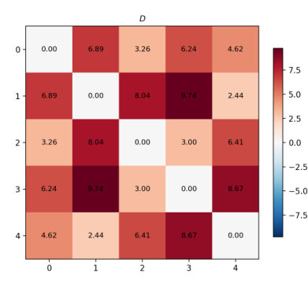
<figcaption class="paper-figure-caption"><b>Fig 1.</b> Figure 1: Double-centering a metric cost An Euclidean distance matrix D and its double centered D′. While the symmetry of the metric matrix is preserved, the positivity and triangular inequality are lost.</figcaption>
</figure>
<figure class="paper-figure-card">
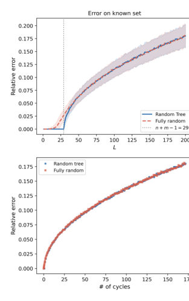
<figcaption class="paper-figure-caption"><b>Fig 2.</b> Figure 2: Fitting prior knowledge of the cost function. Relative error for the reconstruction of the true cost matrix, as a function of the number of known values L (upper panels) and number of cycles formed by such values (lower panelz`us). Left panels show the error on the L known values, right panels show the error on the rest of the unkown values of C. Increasing L decrease the ability to perfectly fit the known values but increase the overall precision on the unknown costs. See Appendix D for details on the setup.</figcaption>
</figure>
<figure class="paper-figure-card">
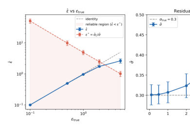
<figcaption class="paper-figure-caption"><b>Fig 3.</b> Figure 3: Accuracy and feasibility of estimating ϵ. Left panel: esti- mated ˆϵ vs the true ϵ (blue line). The estimation remain accurate as long as ϵ remain in the reliable zone (shaded area) defined by ϵ∗(red line). Central panel: estimation of noise level ˆσ (blue line) in the transport plan W as a function of the true temperature ϵ, compared to the true value (dashed line). Right panel: relative error in the estimation of the temperature (blue line) compared to the signal to noise ratio SNR (red line).</figcaption>
</figure>
<figure class="paper-figure-card">
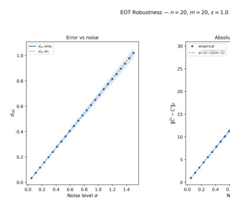
<figcaption class="paper-figure-caption"><b>Fig 4.</b> Figure 4: Numerical validation of noise</figcaption>
</figure>
<figure class="paper-figure-card">
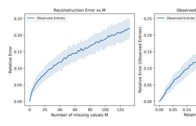
<figcaption class="paper-figure-caption"><b>Fig 5.</b> Figure 5: Error due to missing values</figcaption>
</figure>
</div>

<p><strong>Summary.</strong> This work solves the difficult inverse problem in Optimal Transport by proposing an exact, non-iterative method based on a double-centering operation. This technique uniquely reconstructs the true cost matrix from an observed transport plan, bypassing the need to solve the forward OT problem iteratively. It provides a powerful, general tool for inferring underlying physical costs from empirical transport data.</p>
<p><strong>Why it may be interesting.</strong> While the topic is mathematical statistics/optimization, the underlying structure of OT is deeply connected to quantum information geometry and quantum state estimation, making the rigorous mathematical tools relevant to quantum physics.</p>
<details>
<summary>Detailed structure</summary>
<p><strong>Main problem.</strong> The paper addresses the inverse problem of Optimal Transport (OT): recovering the underlying cost matrix given an observed optimal transport plan. This is challenging due to inherent gauge freedom in the cost structure.</p>
<p><strong>Main result.</strong> The authors provide an exact, closed-form solution using a single double-centering operation to uniquely fix the gauge freedom and recover the cost matrix without iterative optimization. This method is general and extends beyond entropic regularization.</p>
<p><strong>Method.</strong> The core method involves applying a double-centering operation to the observed plan (or its transform) to remove additive row and column gauge contributions, yielding a canonical cost matrix representation.</p>
<p><strong>Model / system.</strong> The framework is based on Optimal Transport (OT) and its regularized version, Entropic Optimal Transport (EOT). The problem is framed as recovering the cost matrix $C$ from the transport plan $W$ that minimizes the regularized energy.</p>
<p><strong>Key observables.</strong> The recovered cost matrix ($ar{C}'$), the temperature parameter ($\epsilon$), and diagnostics like the Signal-to-Noise Ratio (SNR) are key observables.</p>
<p><strong>Important parameters / regimes.</strong> The regularization temperature $\epsilon$, the size of the marginals ($N, M$), and the noise level ($\sigma$) are important parameters.</p>
<p><strong>Assumptions / limitations.</strong> The method assumes the existence of an invertible relation between the cost and the plan, and it is robust to multiplicative noise in the observed plan $W$.</p>
<p><strong>Figures summary.</strong> Figures illustrate the double-centering operation on distance matrices and compare reconstruction errors based on the number of independent cycles in the observed data graph.</p>
<p><strong>Paper structure.</strong> The paper first establishes the inverse OT problem and the gauge freedom. It then introduces the double-centering technique as the exact solution. Subsequent sections detail its application to estimate parameters like $\epsilon$ and analyze reconstruction accuracy under partial information and noise.</p>
</details>
<details>
<summary>Abstract</summary>
<p>Optimal transport describes the most efficient way to move mass between two distributions, given a cost matrix for moving mass between each pair of locations. Entropic optimal transport, solved via the Sinkhorn algorithm, is a widely used regularized version of this problem. Its inverse problem asks the opposite question: given an observed transport plan, what cost matrix produced it? This is difficult because the cost is identifiable only up to an additive gauge freedom. Here we show that this freedom can be fixed exactly by a single double-centering operation applied to the observed plan, yielding the true cost matrix in closed form, with no iterative optimization required. When a modest number of true cost entries are known, the same approach lets us jointly estimate the temperature parameter controlling the entropic regularization, together with a diagnostic for the reliability of this estimate. We further show that the method is not specific to the entropic optimal transport, but extends to a broader class of transport models defined by an invertible relation between cost and plan.</p>
</details>
<p><sub><a href="#top">↑ back to top</a></sub></p>

<p><a id="paper-2609.00124"></a></p>
<h3 id="green-function-zeros-encode-competing-mott-and-charge-ordering-scales"><a href="http://arxiv.org/abs/2609.00124v1">Green-function Zeros Encode Competing Mott and Charge-ordering Scales</a></h3>
<p><strong>Authors:</strong> Peizhi Mai, Philip W. Phillips<br>
<strong>Type:</strong> theory · <strong>Category:</strong> strongly correlated electrons · <strong>PDF:</strong> <a href="https://arxiv.org/pdf/2609.00124v1">https://arxiv.org/pdf/2609.00124v1</a><br>
<strong>Analysis basis:</strong> full PDF text, analyzed in chunks
<strong>Topic relevance:</strong> <code>Keldysh / 2PI / non-Gaussian methods</code> <strong>1/5</strong> · <code>analog quantum simulation</code> <strong>1/5</strong></p>
<div class="figure-strip-hint">↔ Scroll figures horizontally</div>
<div class="paper-figures-scroll">
<figure class="paper-figure-card">
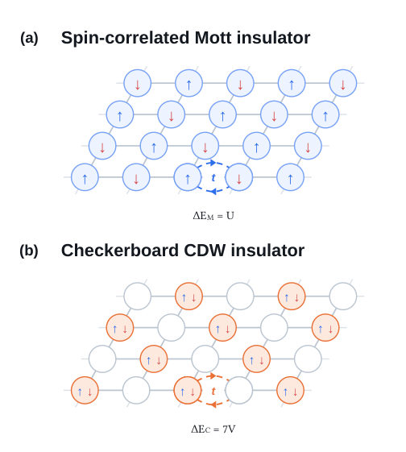
<figcaption class="paper-figure-caption"><b>Fig 1.</b> FIG. 1. Distinct correlated insulators. (a) In the spin- correlated Mott insulator, sites are predominantly singly oc- cupied, and NN hopping t virtually accesses a doublon–holon configuration at energy cost ∆EM = U with V = 0. (b) In the checkerboard CDW insulator, doubly occupied and empty sites alternate, and the corresponding virtual hop accesses two singly occupied defects at cost ∆EC = 7V with U = 0. Dashed counterpropagating arrows identify the virtual pro- cess on a representative bond; the finite patches illustrate the local backgrounds.</figcaption>
</figure>
<figure class="paper-figure-card">
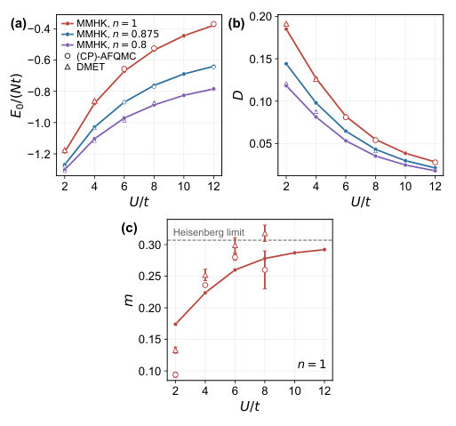
<figcaption class="paper-figure-caption"><b>Fig 2.</b> FIG. 2. Benchmark validation of 16-MMHK. (a, b) Ground-state energy and double occupancy for n = 1, 0.875, and 0.8. Color identifies density; filled circles connected by lines are MMHK, open circles are AFQMC or constrained- path AFQMC, and open triangles are DMET. (c) Half- filled staggered magnetization; the Heisenberg limit is shown. Benchmark-source selection, pointwise values, deviations, and source identities are reported in the Supplemental Material, Sec. 2 and Table S1.</figcaption>
</figure>
<figure class="paper-figure-card">
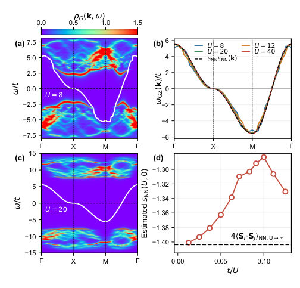
<figcaption class="paper-figure-caption"><b>Fig 3.</b> FIG. 3. Mott-side GZ dispersion. (a,c) Representative spectral functions at V = 0 for U = 8 and 20; white curves mark the gap-interior GZ dispersion. The frequency range expands with the interaction while the spectral color scale is fixed. (b) Extracted GZ dispersions for U = 8, 20, and 40 and the zero-offset fit ωGZ(k) = sNNεNN(k) to the U = 40 curve. (d) Estimated sNN(U, 0) versus t/U for U = 8 ∼80. The dashed line is the independently determined prediction 4⟨Si·Sj⟩NN,U→∞= −1.4036 at the present 16-MMHK reso- lution. The complete spectral sequence is shown in Supple- mental Fig. S2.</figcaption>
</figure>
<figure class="paper-figure-card">
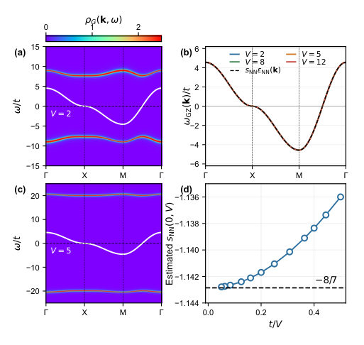
<figcaption class="paper-figure-caption"><b>Fig 4.</b> FIG. 4. CDW-side GZ dispersion. (a,c) Representative spectral functions at U = 0 for V = 2 and 5; white curves mark the gap-interior GZ dispersion. The frequency range expands with the interaction while the spectral color scale is fixed. (b) Extracted GZ dispersions for V = 2, 5, and 8 and the zero-offset fit ωGZ(k) = sNNεNN(k) to the V = 8 curve. (d) Estimated sNN(0, V ) versus t/V for V = 2 ∼20. The dashed line is the parameter-free charge-defect prediction −8/7. The complete spectral sequence is shown in Supple- mental Fig. S3.</figcaption>
</figure>
<figure class="paper-figure-card">
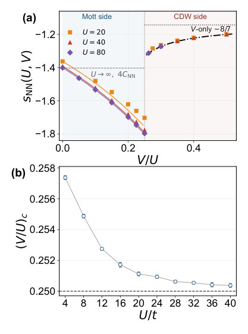
<figcaption class="paper-figure-caption"><b>Fig 5.</b> FIG. 5. GZ coefficient sNN across the Mott–CDW boundary. (a) Signed coefficients for U/t = 20, 40, and 80. Symbols are the GZ data. On the Mott side, the col- ored curves use Eq. (8) with the independently calculated CNN(U, V ); the black dash–dotted curve on the CDW side uses the leading rational term of Eq. (9). Horizontal guides mark the interaction-axis limits and the vertical dotted line marks V/U = 1/4. (b) Independently bracketed first-order transition ratio. Bars show the sampled brackets, the gray line guides the eye, and the dashed line marks 1/4; Supple- mental Material gives the ground-state diagnostics.</figcaption>
</figure>
</div>

<p><strong>Summary.</strong> This work establishes that the dispersion of zeros in the Green's function serves as a key diagnostic for understanding competing ordering tendencies in correlated insulators. By studying the extended Hubbard model, the authors show that the zero dispersion is governed by distinct mechanisms—spin correlations in the Mott phase and defect kinematics in the CDW phase—and that this change is discontinuous at the transition point.</p>
<p><strong>Why it may be interesting.</strong> The concept of using spectral zeros, rather than quasiparticle poles, to characterize insulating states is a powerful diagnostic tool for strongly correlated systems, providing insight into competing orders.</p>
<details>
<summary>Detailed structure</summary>
<p><strong>Main problem.</strong> The paper aims to elucidate the physical meaning of the zeros in the Green's function for correlated insulators, specifically how the dispersion of these zeros encodes the physics of competing ordering tendencies (Mott vs. CDW).</p>
<p><strong>Main result.</strong> The dispersion of the Green's function zeros is determined by both microscopic spin-spin correlations and defect kinematics, exhibiting a discontinuous jump across the Mott–CDW transition, confirming the first-order nature of the transition.</p>
<p><strong>Method.</strong> The study employs analytical and numerical techniques on the extended Hubbard model, focusing on solving for the continuous low-spectral-weight solution to $   ext{Re } G[k, \omega_{  ext{GZ}}(k)] = 0$.</p>
<p><strong>Model / system.</strong> The system is modeled using the extended Hubbard model, incorporating nearest-neighbor repulsion ($V$) alongside standard Hubbard terms ($t, U$), and is analyzed in the context of competing Mott antiferromagnetism and checkerboard CDW ordering.</p>
<p><strong>Key observables.</strong> Green's function zero dispersion ($\omega_{	ext{GZ}}(k)$), coefficients $s_{	ext{NN}}$, ground-state energy, and double occupancy.</p>
<p><strong>Important parameters / regimes.</strong> Interaction strengths ($U, V$), hopping parameters ($t, t'$), and the ratio of these parameters (e.g., $U/t$, $V/t$).</p>
<p><strong>Assumptions / limitations.</strong> The analysis relies on the $V$-extended Momentum-Mixing Hatsugai-Kohmoto (MMHK) framework and takes the zero-broadening limit for calculating the GZ dispersion.</p>
<p><strong>Figures summary.</strong> Figures illustrate the distinct correlated insulators (Mott vs. CDW) and show the GZ dispersion relationship, confirming the discontinuous jump across the transition.</p>
<p><strong>Paper structure.</strong> The paper develops the theory by analyzing the GZ dispersion in the limits of pure Mott ($V=0$) and pure CDW ($U=0$) phases, establishing distinct strong-coupling mechanisms, and then analyzing the crossover region to confirm the first-order nature of the transition.</p>
</details>
<details>
<summary>Abstract</summary>
<p>While correlated insulators are devoid of low-energy quasiparticle poles, their Green functions retain clean momentum structure through zeros. However, precisely what zeros imply is not clear. By studying the extended Hubbard model both analytically and numerically, we establish a new paradigm for strongly correlated matter: the dispersion of Green function zeros is determined by both microscopic spin-spin correlations and defect kinematics. In fact, we find that the dispersion changes discontinuously across the transition between the Mott and the checkerboard charge-density wave phases as is expected for a first-order transition. This physics is robust to the inclusion of further neighbor hopping which simply fine tunes the spin-correlation or charge-defect kinematics. We conclude that it is the {\it dispersion} of the Green-function zeros that encode the physics of ordering resultant from the strong correlations.</p>
</details>
<p><sub><a href="#top">↑ back to top</a></sub></p>

<p><a id="paper-2609.00126"></a></p>
<h3 id="quantum-complexity-dynamics-for-disjoint-subsystems"><a href="http://arxiv.org/abs/2609.00126v1">Quantum Complexity Dynamics for Disjoint Subsystems</a></h3>
<p><strong>Authors:</strong> Yale Fan, Nicholas Hunter-Jones, Andreas Karch, Minju Kum, Shivan Mittal<br>
<strong>Type:</strong> theory · <strong>Category:</strong> statistical mechanics · <strong>PDF:</strong> <a href="https://arxiv.org/pdf/2609.00126v1">https://arxiv.org/pdf/2609.00126v1</a><br>
<strong>Analysis basis:</strong> full PDF text, analyzed in chunks
<strong>Topic relevance:</strong> <code>Keldysh / 2PI / non-Gaussian methods</code> <strong>1/5</strong> · <code>non-equilibrium universality</code> <strong>1/5</strong></p>
<div class="figure-strip-hint">↔ Scroll figures horizontally</div>
<div class="paper-figures-scroll">
<figure class="paper-figure-card">
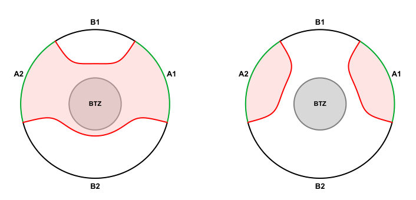
<figcaption class="paper-figure-caption"><b>Fig 1.</b> Figure 1: Two candidate RT surface configurations. All intervals have size &lt; ℓ/2. Left: the “B caps” have smaller area, and the connected entanglement wedge of A (colored in red) contains the wormhole despite that ℓA &lt; ℓ/2. Right: the “A caps” have smaller area, and the entanglement wedge of A does not contain the wormhole.</figcaption>
</figure>
<figure class="paper-figure-card">
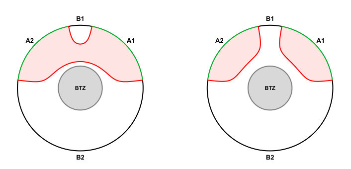
<figcaption class="paper-figure-caption"><b>Fig 2.</b> Figure 2: The case where the complementary subsystem B contains an interval of size &gt; ℓ/2, namely B2. Left: the “B caps” have smaller area. Right: the “A caps” have smaller area. In either case, the entanglement wedge of A does not contain the wormhole.</figcaption>
</figure>
<figure class="paper-figure-card">
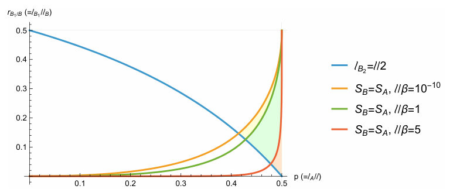
<figcaption class="paper-figure-caption"><b>Fig 3.</b> Figure 3: Lower and upper bounds for rB1/B as functions of p, where rA1/A = 1/2. The blue line is the lower bound. The yellow, green, and orange lines are the upper bounds for ℓ/β = 10−10, ℓ/β = 1, and ℓ/β = 5, respectively. The allowed regions in the (p, rB1/B) parameter space are colored accordingly. For example, when ℓ/β = 1, the allowed region is the union of the green and orange regions. As the temperature increases, the allowed region shrinks.</figcaption>
</figure>
<figure class="paper-figure-card">
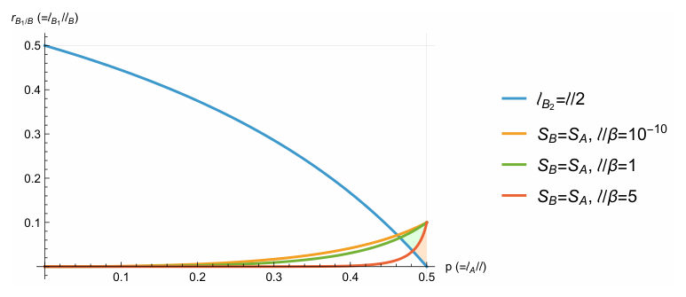
<figcaption class="paper-figure-caption"><b>Fig 4.</b> Figure 4: Same as Figure 3, but with rA1/A = 1/10. As rA1/A decreases, the allowed region shrinks.</figcaption>
</figure>
<figure class="paper-figure-card">

<figcaption class="paper-figure-caption"><b>Fig 5.</b> Figure 5: The upper bound for rB1/B in the low-temperature limit (2.29) is marked as a black dashed curve. The upper bound approaches this curve as we lower the temperature.</figcaption>
</figure>
</div>

<p><strong>Summary.</strong> This paper explores quantum complexity dynamics in systems where the subsystems are not connected. Using both holographic models and random quantum circuits, the authors demonstrate counterintuitive effects, such as a smaller, fragmented subsystem carrying high complexity while a larger one remains simple at finite temperatures. This work sharpens the link between geometric structure and computational complexity in quantum dynamics.</p>
<p><strong>Why it may be interesting.</strong> The findings provide novel insights into how geometric properties (disjointness) can drastically alter the expected thermalization and complexity dynamics of quantum systems, which is relevant for understanding non-equilibrium dynamics in many-body systems.</p>
<details>
<summary>Detailed structure</summary>
<p><strong>Main problem.</strong> The paper investigates quantum complexity dynamics, focusing specifically on how the complexity evolves in noncontiguous (disjoint) subsystems, which is expected to reveal physics beyond the standard connected region analysis.</p>
<p><strong>Main result.</strong> The study shows that at finite temperature, a smaller, noncontiguous subsystem can exhibit exponentially large complexity while its larger complement remains simple, an effect that vanishes in the infinite-temperature limit.</p>
<p><strong>Method.</strong> The authors employ complementary theoretical tools from holographic duality (AdS/CFT) and the analysis of random quantum circuits to calculate quantum complexity.</p>
<p><strong>Model / system.</strong> The models include a CFT on a spatial circle in the thermofield double state (holography) and random quantum circuits on qudits. The analysis compares the complexity of disjoint subsystems A and B.</p>
<p><strong>Key observables.</strong> Quantum Complexity, Entanglement Entropy, and the Ryu–Takayanagi (RT) surface area/volume.</p>
<p><strong>Important parameters / regimes.</strong> Finite temperature ($eta$ finite) vs. infinite temperature ($eta 	o 0$); the number of disjoint components ($m$).</p>
<p><strong>Assumptions / limitations.</strong> The holographic setup assumes identical subsystems on both sides to model the symmetry of the thermofield double state.</p>
<p><strong>Figures summary.</strong> Figures 1 and 2 illustrate candidate RT surface configurations and the implications of the black hole location relative to the entanglement wedge.</p>
<p><strong>Paper structure.</strong> The paper systematically analyzes the holographic complexity for $m=2$ and $m=3$ disjoint intervals, generalizes to arbitrary $m$ to derive the complexity collapse time, and then presents the analogous results using random quantum circuits.</p>
</details>
<details>
<summary>Abstract</summary>
<p>Quantum complexity has emerged as a natural probe of chaos, thermalization, and the black hole interior on timescales long after local observables have equilibrated. However, its time evolution has been studied almost exclusively in subsystems confined to a single connected region. We show, using complementary tools from holography and random quantum circuits, that noncontiguous subsystems composed of multiple disjoint regions give rise to qualitatively new physics compared to the contiguous case. First, at finite temperature, a subsystem occupying less than half of the total system can carry high complexity at late times, even as the complexity of its larger complement remains low. This inversion of the usual hierarchy is intrinsically thermal: it vanishes in the infinite-temperature limit, which is the regime modeled by random quantum circuits. Second, if a subsystem's complexity equilibrates at an early time, then fragmenting it into $m$ disjoint components can further reduce this timescale by a factor of $m$, a phenomenon we exhibit in both holography and random quantum circuits. These results not only sharpen the correspondence between geometric and computational notions of complexity, but also motivate the search for novel complexity phenomena in quantum dynamics.</p>
</details>
<p><sub><a href="#top">↑ back to top</a></sub></p>

<p><a id="paper-2609.01029"></a></p>
<h3 id="tangent-fermions-can-restore-vacuum-stability-of-discrete-time-dirac-models"><a href="http://arxiv.org/abs/2609.01029v1">Tangent fermions can restore vacuum stability of discrete-time Dirac models</a></h3>
<p><strong>Authors:</strong> C. W. J. Beenakker<br>
<strong>Type:</strong> theory · <strong>Category:</strong> other · <strong>PDF:</strong> <a href="https://arxiv.org/pdf/2609.01029v1">https://arxiv.org/pdf/2609.01029v1</a><br>
<strong>Analysis basis:</strong> full PDF text, analyzed in chunks
<strong>Topic relevance:</strong> <code>Keldysh / 2PI / non-Gaussian methods</code> <strong>1/5</strong> · <code>methods for driven-dissipative</code> <strong>1/5</strong></p>
<div class="figure-strip-hint">↔ Scroll figures horizontally</div>
<div class="paper-figures-scroll">
<figure class="paper-figure-card">

<figcaption class="paper-figure-caption"><b>Fig 1.</b> FIG. 1. Quasi-energy–momentum dispersion relation (2.3) of the Dirac quantum walk (2.1), plotted for mass µ = 0.5/τ over several Brillouin zones. Black and white dots indicate filled and empty states, respectively. A particle-hole pair created at k = 0 consumes an energy 2µ, while at k = π/a it releases an energy 2µ. The energy balance can be understood as a temporal Umklapp process. While the periodic drive injects an energy 2π/τ in the system, the particle at k = π/a only gains 2π/τ −2µ.</figcaption>
</figure>
<figure class="paper-figure-card">

<figcaption class="paper-figure-caption"><b>Fig 2.</b> FIG. 2. Dispersion relation (2.6) of the tangent fermion quan- tum map (2.4), plotted for mass µ = 0.5 and velocity v = 1. The mass does not open a gap at k = π, precluding the energy release process of Fig. 1.</figcaption>
</figure>
<figure class="paper-figure-card">

<figcaption class="paper-figure-caption"><b>Fig 3.</b> FIG. 3. Dispersion relation (2.6) plotted for the Cayley energy E = 2 tan(ε/2), rather than for the quasi-energy ε (same parameters as in Fig. 2). The regions identified with the Fermi sea and the Dirac vacuum are indicated, as well as a particle- hole pair produced by interband tunneling (Klein tunneling) in the presence of an electric field F. The infinite band gap at k = π precludes the instability mechanism of Fig. 1 for the spatially-averaged coupling.</figcaption>
</figure>
<figure class="paper-figure-card">

<figcaption class="paper-figure-caption"><b>Fig 4.</b> FIG. 4. Pair production probability T for the tangent fermion quantum map in a uniform electric field F, included via the spatially-averaged coupling. The data points are computed numerically by integration of the Landau-Zener Hamiltonian (3.6), the solid line is the small-F result (3.10).</figcaption>
</figure>
<figure class="paper-figure-card">

<figcaption class="paper-figure-caption"><b>Fig 5.</b> FIG. 5. Pair production probability T0 at zone center and Tπ at zone corner, for the tangent fermion quantum map in a uniform electric field F, included via the split-operator cou- pling. The data points are computed numerically from the spectral flow equation (4.4), the solid and dashed lines are the small-F results (4.6) and (4.11), respectively. The error bars for Tπ give the standard deviation upon averaging over momentum sweeps in the interval π −δk &lt; k &lt; π + δk with δk ∈(0.8, 2.6). There is no significant sweep interval depen- dence for T0.</figcaption>
</figure>
</div>

<p><strong>Summary.</strong> This paper resolves a known vacuum instability issue in discrete-time Dirac models by proposing a tangent fermion discretization. The authors demonstrate that this new scheme maintains a single Dirac cone while ensuring that pair creation at the zone corner does not lead to vacuum decay in the continuum limit. This offers a stable lattice approach for studying relativistic quantum dynamics.</p>
<p><strong>Why it may be interesting.</strong> The work provides a rigorous theoretical framework for stabilizing lattice discretizations of continuum physics (like the Dirac equation), which is crucial for developing reliable numerical simulations in condensed matter theory.</p>
<details>
<summary>Detailed structure</summary>
<p><strong>Main problem.</strong> The paper addresses the vacuum instability of the Dirac quantum walk in discrete time, which arises from particle-hole pair creation at the zone corner.</p>
<p><strong>Main result.</strong> By employing a tangent fermion discretization scheme and using a symmetric split-operator coupling, the model restores vacuum stability by ensuring the zone corner remains gapless and decoupled from the energy release mechanism in the continuum limit.</p>
<p><strong>Method.</strong> The analysis uses the Cayley transformation to map quasi-energies to real energies and calculates the Schwinger effect (pair-production rate) by comparing different lattice coupling schemes.</p>
<p><strong>Model / system.</strong> The system is a Dirac quantum walk modeled by a discrete-time quantum map. The analysis compares the original Dirac quantum walk to a novel tangent fermion discretization, which is analyzed using Floquet operators and coupling potentials.</p>
<p><strong>Key observables.</strong> Schwinger pair-production rate ($\kappa$), quasi-energy gap ($\Delta_\pi$), and the dispersion relation across the Brillouin zone corner.</p>
<p><strong>Important parameters / regimes.</strong> Lattice constants ($    au, a$), mass gap ($\mu$), potential strength ($V_0$), and the smoothness parameter ($\lambda$).</p>
<p><strong>Assumptions / limitations.</strong> The analysis distinguishes between spatially-averaged and exactly gauge-invariant split-operator couplings, and examines the continuum limit ($  au  o 0$).</p>
<p><strong>Figures summary.</strong> Figures illustrate the energy balance showing instability in the original model, the gapless crossing in the tangent fermion model, and the calculated pair production probability $T$ for different coupling schemes.</p>
<p><strong>Paper structure.</strong> The paper progresses by first identifying the instability in the standard Dirac quantum walk, then introducing the tangent fermion scheme, and finally performing a detailed comparison of coupling methods (gauge invariant vs. averaged) to show how the instability is suppressed or vanishes in the continuum limit.</p>
</details>
<details>
<summary>Abstract</summary>
<p>The Dirac quantum walk (a 1+1 dimensional space-time discretization of the Dirac equation) has a $2μ$ mass gap both at the center and at the corner of the quasi-energy-momentum Brillouin zone. Gupta and Short recently noted [Quantum 9, 1845 (2025)] that the Dirac vacuum can create a particle-hole pair at the zone corner with the release of an energy $2μ$ to the environment. They removed this vacuum instability at the expense of fermion doubling, the appearance of a second low-energy Dirac cone. Here we show that an alternative discretization scheme, with a tangent rather than a sine dispersion relation, offers stability while retaining a single Dirac cone. The key step is the Cayley transformation from the unit circle of Floquet eigenvalues $e^{-i\varepsilon}$ to the real line of unbounded energies $E=2\tan(\varepsilon/2)$. We compute the Schwinger effect (particle-hole pair creation in a uniform electric field) for tangent fermions and show that the pair-production rate agrees with the continuum result for a single Dirac cone. The zone corner is exactly decoupled if the scalar potential is coupled through the Hermitian generator of the quantum map. If it is coupled as a split operator, in order to preserve exact gauge invariance on the lattice, the corner does contribute - with a weight that vanishes quadratically with the lattice constants, in contrast to the Dirac quantum walk where the zone-corner instability survives the continuum limit.</p>
</details>
<p><sub><a href="#top">↑ back to top</a></sub></p>

<p><a id="paper-2609.01204"></a></p>
<h3 id="unbiased-sampling-from-boltzmann-distributions-with-noisy-energies"><a href="http://arxiv.org/abs/2609.01204v1">Unbiased sampling from Boltzmann distributions with noisy energies</a></h3>
<p><strong>Authors:</strong> Iwo Sanderski, Gian Gentinetta, Giuseppe Carleo<br>
<strong>Type:</strong> theory · <strong>Category:</strong> numerical methods · <strong>PDF:</strong> <a href="https://arxiv.org/pdf/2609.01204v1">https://arxiv.org/pdf/2609.01204v1</a><br>
<strong>Analysis basis:</strong> full PDF text, analyzed in chunks
<strong>Topic relevance:</strong> <code>methods for driven-dissipative</code> <strong>1/5</strong> · <code>quantum measurements</code> <strong>1/5</strong></p>
<div class="figure-strip-hint">↔ Scroll figures horizontally</div>
<div class="paper-figures-scroll">
<figure class="paper-figure-card">

<figcaption class="paper-figure-caption"><b>Fig 1.</b> FIG. 1: Sampling the Boltzmann distribution of the double-well potential with noisy energies. We compare the PPE (purple) with the penalty method using the exact noise variance (“Penalty, known variance”; yellow) and its variant that estimates the variance stochastically through the Bessel correction (“Penalty, estimated variance”; red). Top row: histograms of the sampled distributions overlaid on the exact Boltzmann density, for energy-estimate variances σ2 = 2.0, 12.0, 24.0 (left to right; inset zooms the σ2 = 24.0 peaks). Bottom row: the corresponding quantile-quantile plots against the exact distribution. While at σ2 = 2.0 all three estimators are accurate, the penalty methods deviate...</figcaption>
</figure>
<figure class="paper-figure-card">

<figcaption class="paper-figure-caption"><b>Fig 2.</b> FIG. 2: Optimization of a variational quantum circuit through simulated annealing with the PPE. We approach the ground state of the H+ 3 molecule in a minimal basis set by sampling variational parameters θ from the Boltzmann distribution e−βE(θ)</figcaption>
</figure>
<figure class="paper-figure-card">

<figcaption class="paper-figure-caption"><b>Fig 3.</b> FIG. 3: Parameter-space points sampled from the Boltzmann distribution with the PPE coupled to an annealing schedule, for three values of the inverse temperature β. The panels at β = 117.2 and β = 1000 are zoomed relative to the one at β = 1. The red circle marks the region in which the variational energy lies within 1.59×10−3 Ha of the FCI minimum. As the system cools, the Boltzmann distribution concentrates in the low-energy region, so that at β = 1000 the sampled parameters fall within this tolerance of the minimum with high probability.</figcaption>
</figure>
<figure class="paper-figure-card">

<figcaption class="paper-figure-caption"><b>Fig 4.</b> Figure 1 compares the sampled distributions to the exact Boltzmann density at three noise levels, σ2 ∈ {2.0, 12.0, 24.0}. At low noise all three estimators are ac- curate, but as the variance grows both penalty variants develop a pronounced bias, evident as systematic devia- tions in the quantile-quantile plots, while the PPE stays faithful to the target throughout. The Bessel variant, which does not presume the variance to be known and is therefore the relevant comparison in practice, degrades the fastest. This contrast originates in the acceptance rate (right panel of Figure 1). The penalty enters the acceptance probability as e−β2σ2 [Equation (3)] and is thus expo- nentially suppressed...</figcaption>
</figure>
</div>

<p><strong>Summary.</strong> This paper addresses the difficulty of sampling from Boltzmann distributions when energy measurements are noisy. The authors introduce the Poisson product estimator, an unbiased technique that outperforms existing methods under high noise. They demonstrate its utility by successfully finding the ground state energy of the H3+ ion using a gradient-free, simulated annealing approach.</p>
<p><strong>Why it may be interesting.</strong> This work provides a crucial, general-purpose numerical tool for quantum simulation, allowing accurate thermal sampling and optimization in settings (like ML potentials or quantum hardware) where energy measurements are inherently noisy.</p>
<details>
<summary>Detailed structure</summary>
<p><strong>Main problem.</strong> The core challenge is accurately sampling from the Boltzmann distribution when the energy expectation value is only available through a stochastic, noisy estimator.</p>
<p><strong>Main result.</strong> The authors introduce the Poisson product estimator, an unbiased method that maintains accurate sampling even when noise levels are high, successfully recovering the ground-state energy of H3+.</p>
<p><strong>Method.</strong> They propose the Poisson product estimator, which is used within a simulated annealing framework to progressively sample the system from high to low temperatures.</p>
<p><strong>Model / system.</strong> The methods are tested on the double-well potential benchmark and applied to finding the ground state of the H3+ ion using a variational quantum circuit.</p>
<p><strong>Key observables.</strong> Energy convergence to the FCI ground-state energy, and the shape of the sampled parameter distribution mapping the variational energy landscape.</p>
<p><strong>Important parameters / regimes.</strong> Inverse temperature ($eta$), noise variance ($\sigma^2$), and the estimator's required upper bound ($E_{\max}$).</p>
<p><strong>Assumptions / limitations.</strong> The estimator must be unbiased and non-negative; the method relies on the existence of an upper bound on the energy estimator.</p>
<p><strong>Figures summary.</strong> Figure 1 compares sampling accuracy across different noise levels for the double-well potential, showing the PPE's robustness. Figure 2 tracks the energy convergence of the H3+ circuit during simulated annealing.</p>
<p><strong>Paper structure.</strong> The paper first establishes the problem of noisy energy sampling, introduces the Poisson product estimator as a superior alternative to the penalty method, and then demonstrates its application via simulated annealing to solve the H3+ ground state problem.</p>
</details>
<details>
<summary>Abstract</summary>
<p>Sampling from the Boltzmann distribution is central to computational physics, yet hard when the energy is known only through a stochastic estimate, such as with machine-learned molecular potentials, in variational Monte Carlo, or on quantum computers, because a noisy energy biases the sampled distribution. The penalty method of Ceperley and Dewing corrects this but requires the noise variance and becomes intractable when it is large. We introduce the Poisson product estimator, an unbiased, non-negative estimator of the Boltzmann weight that only needs an upper bound on the energy estimator and remains efficient at high noise. Using it to optimize a variational quantum circuit gradient-free, we recover the $H_3^+$ ground-state energy in a minimal basis and, by sampling rather than following a single trajectory, also map the variational energy landscape.</p>
</details>
<p><sub><a href="#top">↑ back to top</a></sub></p>

<p><a id="paper-2609.01297"></a></p>
<h3 id="a-scalable-multi-protocol-platform-for-quantum-key-distribution-simulation-with-rigorous-statistical-evaluation"><a href="http://arxiv.org/abs/2609.01297v1">A Scalable Multi-Protocol Platform for Quantum Key Distribution Simulation with Rigorous Statistical Evaluation</a></h3>
<p><strong>Authors:</strong> Anuj Rathore, Kartick Sutradhar<br>
<strong>Type:</strong> theory · <strong>Category:</strong> quantum information and computing · <strong>PDF:</strong> <a href="https://arxiv.org/pdf/2609.01297v1">https://arxiv.org/pdf/2609.01297v1</a><br>
<strong>Analysis basis:</strong> full PDF text, analyzed in chunks
<strong>Topic relevance:</strong> <code>quantum measurements</code> <strong>1/5</strong></p>
<div class="figure-strip-hint">↔ Scroll figures horizontally</div>
<div class="paper-figures-scroll">
<figure class="paper-figure-card">

<figcaption class="paper-figure-caption"><b>Fig 1.</b> Fig. 1. Desktop GUI: single-simulation parameter panel. Every field carries a physical unit label. The eavesdropping checkbox and impairment toggles appear below the channel parameters. Range validation prevents values outside physically meaningful bounds before the run is dispatched (https://qkd-simulator-voe2.onrender.com/).</figcaption>
</figure>
<figure class="paper-figure-card">

<figcaption class="paper-figure-caption"><b>Fig 2.</b> Fig. 2. Desktop GUI: per-protocol result cards from a single simulation pass. All four protocols execute in one call under identical parameters. The E91 card includes the CHSH S-statistic alongside the metrics shared by all protocols. The side-by-side layout makes sifting efficiency differences immediately visible (https://qkd-simulator-voe2.onrender.com/).</figcaption>
</figure>
<figure class="paper-figure-card">

<figcaption class="paper-figure-caption"><b>Fig 3.</b> Fig. 1 shows the desktop parameter entry panel and Fig. 2 shows the per-protocol result cards generated after a single run. Figs. 3 and 4 show the corresponding web interface panels.</figcaption>
</figure>
<figure class="paper-figure-card">

<figcaption class="paper-figure-caption"><b>Fig 4.</b> Fig. 3. Web interface: parameter sweep configuration panel. The user selects the sweep axis (here, fiber loss in dB/km), the range, step size, and number of runs per point. The form posts to /simulate/sweep; the server aggregates results before responding.</figcaption>
</figure>
<figure class="paper-figure-card">

<figcaption class="paper-figure-caption"><b>Fig 5.</b> Fig. 4. Web interface: sweep results for all four protocols. Confidence bands (shaded) widen at 40 km due to detection sparsity under high attenuation. The protocol ordering is stable across all sweep points and consistent with the sifting coefficients in Table III.</figcaption>
</figure>
</div>

<p><strong>Summary.</strong> This paper introduces a scalable, unified simulation platform for comparing four major Quantum Key Distribution protocols (BB84, B92, E91, BBM92). By modeling realistic channel impairments and performing extensive statistical analysis, it allows for systematic comparison of key rates and security diagnostics like the CHSH S-statistic across varying fiber lengths.</p>
<p><strong>Why it may be interesting.</strong> It provides a highly rigorous, statistically robust simulation environment for comparing fundamental quantum communication protocols, which is crucial for understanding practical quantum network feasibility.</p>
<details>
<summary>Detailed structure</summary>
<p><strong>Main problem.</strong> Existing Quantum Key Distribution (QKD) simulation tools are limited to single protocols and lack rigorous statistical evaluation, hindering systematic comparison.</p>
<p><strong>Main result.</strong> The platform demonstrates that BB84 achieves the highest mean key-rate (160,045 Hz) at 25 km, and the E91 protocol successfully detects eavesdropping by showing a drop in the CHSH S-statistic from 2.12 to 1.58.</p>
<p><strong>Method.</strong> The authors developed a unified simulation platform using Python/Qiskit that models four foundational QKD protocols (BB84, B92, E91, BBM92) under a shared impairment model.</p>
<p><strong>Model / system.</strong> The system simulates QKD over a fiber link, incorporating impairments like attenuation, source/detector losses, polarization drift, and configurable eavesdropping attacks. It supports both a local desktop GUI and a remote web client interface.</p>
<p><strong>Key observables.</strong> Key-rate (Hz), Quantum Bit Error Rate (QBER), and the CHSH S-statistic.</p>
<p><strong>Important parameters / regimes.</strong> Fiber length (10, 25, 40 km), number of independent runs (20), and qubits per run (10000).</p>
<p><strong>Assumptions / limitations.</strong> The model primarily includes intercept-resend attacks; it does not account for dark counts, timing jitter, or multi-photon emission.</p>
<p><strong>Figures summary.</strong> Figures illustrate the desktop GUI for parameter entry and results visualization, and the web interface for parameter sweeps, showing confidence bands widening at longer distances.</p>
<p><strong>Paper structure.</strong> The paper introduces the problem, details the unified simulation platform architecture (Python/Qiskit core, dual interfaces), presents the shared impairment model, and concludes with comparative results across the four protocols and varying link lengths.</p>
</details>
<details>
<summary>Abstract</summary>
<p>Quantum Key Distribution (QKD) offers information- theoretically secure key establishment grounded in the laws of quantum physics, yet its practical reach is limited by the prohibitive cost of photonic hardware and the fragmented nature of existing simulation tools. Most simulators support only a single protocol and report results from individual stochastic runs, making systematic protocol comparison and reproducible statistical inference difficult. This paper presents a unified QKD simulation platform that implements four foundational protocols BB84, B92, E91, and BBM92 within a single Python/Qiskit engine. A shared impairment model covers fiber attenuation, source and detector losses, po- larization drift, and configurable intercept-resend eavesdropping. The platform is accessible through two independent interfaces that share the same backend: a desktop application (Tkinter, Matplotlib) for local experimentation and a browser-based web client (React, Node.js/Express) for zero-install remote access. All reported results are drawn from repeated-run studies (20 independent runs, 10000 qubits each), with mean, standard deviation, and 95% confidence intervals stated throughout. At a 25 km fiber link, BB84 achieves the highest mean key-rate of 160,045 Hz, followed by BBM92 (80023 Hz), E91 (52815 Hz), and B92 (40011 Hz) ordering that tracks simulation-derived sifting efficiencies precisely. Under the E91 protocol, the CHSH S-statistic averages 2.12 at baseline and falls to 1.58 when an eavesdropper is activated, demonstrating Bell-inequality-based intrusion detection independent of QBER</p>
</details>
<p><sub><a href="#top">↑ back to top</a></sub></p>

<p><a id="paper-2609.00160"></a></p>
<h3 id="exploring-thermal-order-in-conformal-theories-with-multiple-scalars-coupled-to-an-math532math-vector-field"><a href="http://arxiv.org/abs/2609.00160v1">Exploring thermal order in conformal theories with multiple scalars coupled to an $O(N)$ vector field</a></h3>
<p><strong>Authors:</strong> Soumyadeep Chaudhuri, Bilal Hawashin, Eliezer Rabinovici, Michael M. Scherer<br>
<strong>Type:</strong> theory · <strong>Category:</strong> statistical mechanics · <strong>PDF:</strong> <a href="https://arxiv.org/pdf/2609.00160v1">https://arxiv.org/pdf/2609.00160v1</a><br>
<strong>Analysis basis:</strong> full PDF text, analyzed in chunks
<strong>Topic relevance:</strong> <code>Keldysh / 2PI / non-Gaussian methods</code> <strong>1/5</strong></p>
<div class="figure-strip-hint">↔ Scroll figures horizontally</div>
<div class="paper-figures-scroll">
<figure class="paper-figure-card">

<figcaption class="paper-figure-caption"><b>Fig 1.</b> Figure 1: Plot of D(+)(N).</figcaption>
</figure>
<figure class="paper-figure-card">

<figcaption class="paper-figure-caption"><b>Fig 2.</b> Figure 2: Plots of the different couplings ( ef, eg, eh, eζ) at the two real fixed points for M = 2 and 2 &lt; N &lt; Nu ≈21.86: The two fixed points have the same values of ef and eζ, viz. ef(+) ∗ and eζ(+) ∗ . These are indicated by black curves. The values of eg and eh for the two fixed points are (eg(−,+) ∗ ,eh(−,+) ∗ ) and (eg(+,+) ∗ ,eh(+,+) ∗ ), indicated in red and blue, respectively.</figcaption>
</figure>
<figure class="paper-figure-card">

<figcaption class="paper-figure-caption"><b>Fig 3.</b> Figure 3: The values of the different couplings at the two real fixed points for M = 3 and 1 &lt; N &lt; Nu ≈15.94 are plotted in red and blue.</figcaption>
</figure>
<figure class="paper-figure-card">

<figcaption class="paper-figure-caption"><b>Fig 4.</b> Figure 4: Plot of ( efeg −eζ2) as a function of N for the fixed point in the M = 2 case with couplings ( ef(+) ∗ , eg(−,+) ∗ ,eh(−,+) ∗ , eζ(+) ∗ ).</figcaption>
</figure>
<figure class="paper-figure-card">

<figcaption class="paper-figure-caption"><b>Fig 5.</b> Figure 5: Plots of (eg −|eh|) and ( ef(eg −|eh|) −eζ2) as functions of N for the fixed point in the M = 2 case with couplings ( ef(+) ∗ , eg(+,+) ∗ ,eh(+,+) ∗ , eζ(+) ∗ ).</figcaption>
</figure>
</div>

<p><strong>Summary.</strong> This paper studies thermal order in CFTs involving multiple scalars coupled to an O(N) vector field. Using FRG and large N techniques, the authors demonstrate that in 3D, they can construct models where a discrete symmetry remains spontaneously broken at all non-zero temperatures. This provides a theoretical framework for persistent symmetry breaking beyond standard expectations.</p>
<p><strong>Why it may be interesting.</strong> The concept of persistent symmetry breaking at finite temperature is a core topic in statistical mechanics and quantum field theory, directly challenging the Mermin-Wagner-Coleman-Hohenberg theorem's implications for discrete symmetries.</p>
<details>
<summary>Detailed structure</summary>
<p><strong>Main problem.</strong> The paper investigates the phenomenon of 'thermal order,' specifically whether symmetries spontaneously broken at low temperatures can persist (remain broken) at all non-zero temperatures in quantum field theories.</p>
<p><strong>Main result.</strong> The authors find a novel class of large N CFTs in three dimensions where a discrete symmetry is proven to be spontaneously broken at all non-zero temperatures, challenging standard intuition about thermal symmetry restoration.</p>
<p><strong>Method.</strong> The study employs the Functional Renormalisation Group (FRG) technique and large N expansion methods, first analyzing the system in d=4-epsilon dimensions before focusing on the 3D limit.</p>
<p><strong>Model / system.</strong> The system consists of Conformal Field Theories (CFTs) in d=4-epsilon and d=3 dimensions, involving multiple scalars coupled to an O(N) vector field, possessing symmetries like Z_2^M 
times S_M.</p>
<p><strong>Key observables.</strong> Symmetry breaking patterns, thermal expectation values, and the existence/stability of fixed points in the RG flow.</p>
<p><strong>Important parameters / regimes.</strong> The number of scalars (M), the dimension (d=3 or 4-epsilon), and the large N limit (M &lt;&lt; N).</p>
<p><strong>Assumptions / limitations.</strong> The analysis relies on the large N expansion and functional renormalization group techniques, with the continuation from (4-epsilon) dimensions to 3D being a key, though potentially problematic, step.</p>
<p><strong>Paper structure.</strong> The paper first analyzes the system in (4-epsilon) dimensions using FRG to find fixed points. It then discusses the continuation of these fixed points to d=3, noting potential non-unitarity. Finally, it works directly in d=3 using large N techniques to prove persistent symmetry breaking in a specific subspace of the conformal manifold.</p>
</details>
<details>
<summary>Abstract</summary>
<p>We study thermal order in conformal field theories (CFTs) in $d=4-ε$ and $d=3$ dimensions where several scalars are coupled to an $O(N)$ vector field. In $(4-ε)$ dimensions, we consider models coupling a cubic model of $M$ scalars with $\mathbb{Z}_2^M\rtimes S_M$ symmetry (corresponding to sign flips and permutations of the scalars) to an $O(N)$ vector model. For any $M$, we find a window of $N$ in which two Wilson-Fisher-like fixed points exist. We show that the $\mathbb{Z}_2^M\rtimes S_M$ symmetry is spontaneously broken at arbitrary nonzero temperatures for $M=2$ and sufficiently large $N$ within this window, but it remains unbroken for $M>2$. Using the functional renormalisation group to continue these fixed points towards three dimensions, we find that they collide and move into the complex plane well before reaching $d=3$, suggesting that their continuation to $d=3$ does not yield unitary CFTs. We then work directly in three dimensions at large but finite $N$, with $M\ll N$, initially without assuming any permutation symmetry among the $M$ scalars. By studying the RG flow, we show that these models possess a conformal manifold up to the leading nontrivial order in the $1/N$ expansion of the beta functions (which is $\mathcal{O}(1/N)$). At each point on this manifold, the scalars split into two classes that are distinguished by how they couple to the $O(N)$ vector field. We then restrict to a subspace of the conformal manifold where there is an additional symmetry under permutations of the scalars within each class. We prove that in a domain of this subspace, all $M$ scalars acquire thermal expectation values such that the symmetry under sign flips of the scalars is spontaneously broken at all nonzero temperatures. This provides a novel class of large $N$ CFTs that exhibit a rich pattern of persistent symmetry breaking at nonzero temperatures.</p>
</details>
<p><sub><a href="#top">↑ back to top</a></sub></p>

<p><a id="paper-2609.01118"></a></p>
<h3 id="interfacial-orbital-torques-excite-nanoscale-terahertz-magnons"><a href="http://arxiv.org/abs/2609.01118v1">Interfacial orbital torques excite nanoscale terahertz magnons</a></h3>
<p><strong>Authors:</strong> Harshita Devda, Peter M. Oppeneer, Ulrich Nowak<br>
<strong>Type:</strong> theory · <strong>Category:</strong> statistical mechanics · <strong>PDF:</strong> <a href="https://arxiv.org/pdf/2609.01118v1">https://arxiv.org/pdf/2609.01118v1</a><br>
<strong>Analysis basis:</strong> full PDF text, analyzed in chunks
<strong>Topic relevance:</strong> <code>Keldysh / 2PI / non-Gaussian methods</code> <strong>1/5</strong></p>
<div class="figure-strip-hint">↔ Scroll figures horizontally</div>
<div class="paper-figures-scroll">
<figure class="paper-figure-card">

<figcaption class="paper-figure-caption"><b>Fig 1.</b> Figure 1. (a) Schematic illustration of symmetric (left) and asymmetric (right) trilayers, to which single cycle THz laser pulses are applied, generating conventional SOTs at the two opposing interfaces. SOTs in symmetric/antisymmetric interfaces support odd/even PSSW modes. (b) Layer-resolved field-like and anti-damping-like SOT fields, HFL and HADL, respectively, taken from Ref. [27] and extrapolated for Nz = 48 Co atomic layers, for symmetric and asymmetric interface configurations.</figcaption>
</figure>
<figure class="paper-figure-card">

<figcaption class="paper-figure-caption"><b>Fig 2.</b> Figure 2. (a) Simulated interface spin dynamics of the transverse spin component (Sz) after THz laser excitation, for different Co thicknesses Nz, and for both, the symmetric and asymmetric configurations. (b) Fourier transforms ˜q(f) and ˜g(f) of the transverse spin components for the symmetric and asymmetric SOT interfaces and Nz = 48. (c) ˜g(f) for thinner Co layers, Nz = 32 and Nz = 16. (d) Mode frequencies calculated analytically from the Kittel formula for three Co layer thicknesses. The Kittel formula includes all frequencies which can occur and does not distinguish the symmetric or asymmetric configurations.</figcaption>
</figure>
<figure class="paper-figure-card">

<figcaption class="paper-figure-caption"><b>Fig 3.</b> Figure 3. Fourier transform of the time-dependent spin com- ponent, simulated independently in the presence of either M-even (field-like) or M-odd (antidamping-like) SOT for Nz = 48 at E = 3 × 108 V/m.</figcaption>
</figure>
<figure class="paper-figure-card">

<figcaption class="paper-figure-caption"><b>Fig 4.</b> Figure 4. Mode excitation in the asymmetric-SOT configura- tion computed in the presence or absence of the orbital torque (OT) in addition to the spin torque (ST) under laser pulse ex- citation with different electric field magnitudes. Insets show zooms into the peaks at n = 2 and n = 4.</figcaption>
</figure>
</div>

<p><strong>Summary.</strong> This paper theoretically investigates the mechanism driving terahertz magnon excitation in thin magnetic multilayers. By developing an atomistic framework, the authors successfully decompose the complex interfacial spin-orbit torque into its constituent spin and orbital parts. They conclude that the orbital torque, specifically its field-like component, is the dominant microscopic mechanism enabling efficient, symmetry-controlled excitation of these confined THz spin waves.</p>
<p><strong>Why it may be interesting.</strong> This work provides a detailed, atomistic, and symmetry-controlled understanding of how interfacial coupling mechanisms (orbital torques) can be engineered to control quantum dynamics (THz magnons) in condensed matter systems, which is highly relevant to open quantum systems and spintronics.</p>
<details>
<summary>Detailed structure</summary>
<p><strong>Main problem.</strong> The study aims to resolve the microscopic origin of the interfacial driving torque responsible for exciting terahertz (THz) magnons in nanometer-thick ferromagnets, particularly due to the complexity of coexisting spin and orbital currents.</p>
<p><strong>Main result.</strong> The research identifies the interfacial orbital torque as the primary channel for efficiently exciting exchange-dominated THz magnons, with the field-like component being the dominant torque contribution.</p>
<p><strong>Method.</strong> The authors developed an atomistic framework, using first-principles calculations (Kubo formalism) and atomistic spin-dynamics simulations, to explicitly separate and analyze spin and orbital torque contributions.</p>
<p><strong>Model / system.</strong> The system involves thin ferromagnets (e.g., Co) sandwiched between non-magnetic layers, forming trilayers (NM/FM/NM). The model utilizes an effective Heisenberg Hamiltonian augmented by a Spin-Orbit Torque (SOT) term.</p>
<p><strong>Key observables.</strong> Excitation of perpendicular standing spin-wave (PSSW) modes in the THz regime, and the spectral power densities ($ ilde{q}(f),     ilde{g}(f)$) derived from the magnetization dynamics.</p>
<p><strong>Important parameters / regimes.</strong> THz pulse amplitude ($\sim 10^8$ V/m), film thickness ($N_z$ layers), and the separation of torque into field-like (M-even) and anti-damping-like (M-odd) components.</p>
<p><strong>Assumptions / limitations.</strong> The SOT effective fields are assumed to remain close to their static values over the THz excitation timescale, and the orbital torque contribution is localized at the interfaces.</p>
<p><strong>Figures summary.</strong> Figures illustrate the schematic of symmetric/asymmetric trilayers under THz pulses, showing how SOTs support different PSSW modes. Subsequent figures compare mode excitation using different torque components (M-even vs. M-odd) and highlight the role of the orbital torque.</p>
<p><strong>Paper structure.</strong> The paper progresses by establishing the physical problem (unclear torque origin), detailing the theoretical framework (atomistic decomposition of SOT), presenting the simulation results (analyzing mode excitation based on torque components), and concluding with the identification of the orbital torque as the key driver.</p>
</details>
<details>
<summary>Abstract</summary>
<p>Exchange-dominated magnons in nanometer-thick ferromagnets extend to the terahertz regime through thickness quantization of perpendicular standing spin-wave (PSSW) modes. While interfacial spin-orbit torques (SOTs) have been shown to enable the excitation of such modes, the microscopic origin of the interfacial driving torque remains unclear. In particular, the coexistence of spin and orbital currents complicates the understanding. Here, we develop and use an atomistic framework that explicitly resolves interfacial symmetries and separates spin and orbital torque contributions. Exploiting a trilayer geometry for a thin ferromagnet sandwiched between non-magnetic layers, where the symmetry-controlled polarity of the interfacial torque produces mode-selective magnon excitation as observed in the recent experiment of Salikhov et al. Nature Phys. 19, 529 (2023), we disentangle the different interfacial torque contributions. By decomposing the torque into magnetization-even (field-like) and magnetization-odd components, we identify the field-like torque as the dominant contribution responsible for the excitation. Crucially, isolating orbital and spin contributions reveals that the interfacial orbital torque provides the primary channel for the efficient excitation of exchange-dominated THz magnons in thin ferromagnets. Our results establish a microscopic basis for symmetry-engineered control of confined terahertz spin dynamics in magnetic multilayers.</p>
</details>
<p><sub><a href="#top">↑ back to top</a></sub></p>

<p><a id="paper-2609.00801"></a></p>
<h3 id="magnetic-quantum-defects-in-a-uniaxial-antiferromagnetic-insulator"><a href="http://arxiv.org/abs/2609.00801v1">Magnetic quantum defects in a uniaxial antiferromagnetic insulator</a></h3>
<p><strong>Authors:</strong> Shangfei Wu, Laur Peedu, Zhihao Wang, Xuecong Wang, Xianghan Xu, Kai Du, Sang-Wook Cheong, Aleksei Boldin, Joosep Link, Ivo Heinmaa, Raivo Stern, Sai Mu, Urmas Nagel, Toomas Rõõm, Girsh Blumberg<br>
<strong>Type:</strong> both · <strong>Category:</strong> strongly correlated electrons · <strong>PDF:</strong> <a href="https://arxiv.org/pdf/2609.00801v1">https://arxiv.org/pdf/2609.00801v1</a><br>
<strong>Analysis basis:</strong> full PDF text, analyzed in chunks
<strong>Topic relevance:</strong> <code>analog quantum simulation</code> <strong>1/5</strong></p>
<div class="figure-strip-hint">↔ Scroll figures horizontally</div>
<div class="paper-figures-scroll">
<figure class="paper-figure-card">

<figcaption class="paper-figure-caption"><b>Fig 1.</b> FIG. 1. Low-energy Raman and absorption spectra for the “Rutgers”-Cr2O3 sample.</figcaption>
</figure>
<figure class="paper-figure-card">

<figcaption class="paper-figure-caption"><b>Fig 2.</b> FIG. 2. Temperature dependence of the Raman response for the “Rutgers”-Cr2O3</figcaption>
</figure>
<figure class="paper-figure-card">

<figcaption class="paper-figure-caption"><b>Fig 3.</b> FIG. 3. Magnetic field dependence. a Magnetic field dependence of the magnetization</figcaption>
</figure>
<figure class="paper-figure-card">

<figcaption class="paper-figure-caption"><b>Fig 4.</b> FIG. 4. Illustrations of different types of Cr vacancies. a The Cr2O3 crystal structure</figcaption>
</figure>
<figure class="paper-figure-card">

<figcaption class="paper-figure-caption"><b>Fig 5.</b> Fig. 3c of the main text is reploted here in panel c.</figcaption>
</figure>
</div>

<p><strong>Summary.</strong> This paper investigates magnetic quantum defects in the antiferromagnet Cr2O3 using combined spectroscopic and theoretical approaches. The researchers identified three vacancy-induced excitations, interpreting the most prominent one (E1) as a local magnetic excitation of the chromium vacancy moment. This work establishes the potential of these defect states for quantum applications by linking their energy and field dependence to fundamental magnetic interactions.</p>
<p><strong>Why it may be interesting.</strong> The work provides a detailed spectroscopic fingerprint of localized magnetic moments associated with crystal defects, which is crucial for understanding how magnetic order and local spin dynamics can be engineered in solid-state quantum materials.</p>
<details>
<summary>Detailed structure</summary>
<p><strong>Main problem.</strong> The primary goal is to identify and characterize magnetic quantum defects within the uniaxial antiferromagnetic insulator, Cr2O3, suitable for potential quantum applications.</p>
<p><strong>Main result.</strong> The authors discovered three distinct, vacancy-induced excitations, with the lowest energy mode (E1) being interpreted as a local magnetic excitation of the chromium vacancy state, sensitive to external magnetic fields near the spin-flop regime.</p>
<p><strong>Method.</strong> The study combines experimental techniques (polarization-resolved Raman and terahertz spectroscopy) with theoretical modeling, including defect supercell first-principles calculations and spin Hamiltonian analysis.</p>
<p><strong>Model / system.</strong> The physical system is Cr2O3, an antiferromagnetic insulator. The theoretical model focuses on the magnetic excitations arising from chromium vacancies (V_Cr) within the crystal structure, modeled using spin Hamiltonians and DFT calculations.</p>
<p><strong>Key observables.</strong> Three distinct excitations (E1, E2, E3); the E1 mode energy (64 cm-1); mode softening near the spin-flop field (6T); and the dependence of mode strength on vacancy concentration.</p>
<p><strong>Important parameters / regimes.</strong> External magnetic field (H); spin-flop field (H_SF); temperature (T); and the local magnetic excitation energy scale (tens of meV).</p>
<p><strong>Assumptions / limitations.</strong> The interpretation of the E1 mode as a local magnetic excitation is based on defect supercell calculations, and the analysis relies on specific selection rules derived from the tunneling Hamiltonian approach.</p>
<p><strong>Figures summary.</strong> Figures illustrate spin structure, low-energy Raman/terahertz spectra showing field dependence, and comparisons of magnetic properties (magnetization vs. E1 mode strength) between different sample types.</p>
<p><strong>Paper structure.</strong> The paper progresses from identifying the general problem of defect characterization, through experimental measurements linking excitations to vacancies, and finally to detailed theoretical modeling using spin Hamiltonians and selection rules to confirm the magnetic origin of the key low-energy mode.</p>
</details>
<details>
<summary>Abstract</summary>
<p>Point defects have been successfully utilized in various quantum technologies, serving as quantum qubits for quantum computation, single-photon emitters for quantum communication, and nanoscale sensors for quantum metrology. However, their further development faces key challenges, particularly in discovering and exploring suitable defect-host systems that meet the necessary criteria for quantum applications. Here, using polarization-resolved Raman spectroscopy and terahertz absorption spectroscopy, we discover three distinct chromium-vacancy-induced excitations in the uniaxial antiferromagnetic insulator, Cr$_2$O$_3$. These vacancy-induced excitations have an energy scale of a few tens of millielectronvolts and are twofold degenerate, and the lowest one at 64 $cm^{-1}$ is sharp and sensitive to the external magnetic field along the easy-axis direction, particularly close to the spin-flop regime around 6T, where the mode softens from 64 to 27$cm^{-1}$. Based on the defect supercell first-principles calculations, we interpret the mode at 64 $cm^{-1}$ as a local magnetic excitation of the local moment within the chromium vacancy state. Our results establish that the magnetic defect states in Cr$_2$O$_3$ have potential for quantum applications.</p>
</details>
<p><sub><a href="#top">↑ back to top</a></sub></p>

<p><a id="paper-2609.00545"></a></p>
<h3 id="parafermions-in-plain-sight"><a href="http://arxiv.org/abs/2609.00545v1">Parafermions in plain sight</a></h3>
<p><strong>Authors:</strong> Siu A. Chin, A. Chaudhary<br>
<strong>Type:</strong> theory · <strong>Category:</strong> statistical mechanics · <strong>PDF:</strong> <a href="https://arxiv.org/pdf/2609.00545v1">https://arxiv.org/pdf/2609.00545v1</a><br>
<strong>Analysis basis:</strong> full PDF text, analyzed in chunks
<strong>Topic relevance:</strong> <code>analog quantum simulation</code> <strong>1/5</strong></p>
<div class="figure-strip-hint">↔ Scroll figures horizontally</div>
<div class="paper-figures-scroll">
<figure class="paper-figure-card">

<figcaption class="paper-figure-caption"><b>Fig 1.</b> FIG. 1: (color online) The energy of two non-interacting particles in a two dimensional harmonic</figcaption>
</figure>
<figure class="paper-figure-card">

<figcaption class="paper-figure-caption"><b>Fig 2.</b> FIG. 2: (color online) Similar to Fig.1 for N = 3 particles.</figcaption>
</figure>
<figure class="paper-figure-card">

<figcaption class="paper-figure-caption"><b>Fig 3.</b> FIG. 3: (color online) Similar to Fig.1 for N = 4 particles.</figcaption>
</figure>
</div>

<p><strong>Summary.</strong> This theoretical paper explores generalized quantum statistics by interpolating between bosonic and fermionic partition functions using a parameter $\xi$. It demonstrates that at specific discrete values $\xi = -1/m$, the system exhibits parafermionic behavior, leading to characteristic ground state energies and a distinct grand canonical partition function. This work extends the understanding of quantum statistics beyond standard models.</p>
<p><strong>Why it may be interesting.</strong> The explicit mathematical derivation of parastatistics via partition function interpolation provides a powerful theoretical tool for understanding generalized quantum statistics beyond simple bosons and fermions.</p>
<details>
<summary>Detailed structure</summary>
<p><strong>Main problem.</strong> The paper investigates the interpolation between ideal boson and fermion partition functions at discrete values of the exchange weight factor $\xi = -1/m$. It aims to characterize the resulting zero-temperature ground state energies and the underlying statistics.</p>
<p><strong>Main result.</strong> The interpolation yields non-trivial ground state energies corresponding to parafermions of order $m$ at specific discrete values of $\xi = -1/m$. The grand canonical partition function confirms the existence of genuine parastatistics for these cases.</p>
<p><strong>Method.</strong> The analysis uses recursion relations for the partition function $Z_N$ and derives the grand canonical partition function $\Xi(t)$ using generating functions and algebraic combinatorics.</p>
<p><strong>Model / system.</strong> The model considers non-interacting particles confined in any potential possessing a discrete energy spectrum. The statistics are governed by the parameter $\xi$, which interpolates between bosonic ($\xi=1$) and fermionic ($\xi=-1$) behavior.</p>
<p><strong>Key observables.</strong> Zero-temperature ground state energy ($E_N$), Grand Canonical Partition Function ($\Xi(t)$), and the coefficient of the $t^N$ term in the generating function.</p>
<p><strong>Important parameters / regimes.</strong> The exchange weight factor $\xi$, the number of particles $N$, and the inverse temperature $\beta$. The critical parameter regime is $\xi = -1/m$ for integer $m$.</p>
<p><strong>Assumptions / limitations.</strong> The potential is assumed to have a discrete energy spectrum. The method treats $\xi$ as a mathematical parameter, potentially leading to unphysical results.</p>
<p><strong>Figures summary.</strong> Figures illustrate the energy $E$ vs. $\beta$ for small $N$, showing deviations from the boson limit only at specific $\xi$. Table I summarizes these calculated energies for $N=2, 3, 4$.</p>
<p><strong>Paper structure.</strong> The paper first establishes the general framework using recursion relations for $Z_N$ and calculates the energy $E$. It then derives the general form of the grand canonical partition function $\Xi(t)$ and applies it to the specific case $\xi = -1/m$, confirming the connection to parafermionic statistics.</p>
</details>
<details>
<summary>Abstract</summary>
<p>We show that for any potential with a discrete energy spectrum, the well-known interpolation between ideal boson and fermion partition functions at discrete values of $ξ=-1/m$ yielded zero temperature ground state energies corresponding to $m$ fermions occupying a single quantum state. The grand canonical partition function in this case can be a result from genuine parastatistics.</p>
</details>
<p><sub><a href="#top">↑ back to top</a></sub></p>

<p><a id="paper-2609.00220"></a></p>
<h3 id="quantum-secret-sharing-with-a-helper-and-programmable-access-structures"><a href="http://arxiv.org/abs/2609.00220v1">Quantum Secret Sharing with a Helper and Programmable Access Structures</a></h3>
<p><strong>Authors:</strong> Eric Chitambar, Sarah Hagen, David W. Kribs, Mike I. Nelson, Andrew Nemec<br>
<strong>Type:</strong> theory · <strong>Category:</strong> quantum information and computing · <strong>PDF:</strong> <a href="https://arxiv.org/pdf/2609.00220v1">https://arxiv.org/pdf/2609.00220v1</a><br>
<strong>Analysis basis:</strong> full PDF text, analyzed in chunks
<strong>Topic relevance:</strong> <code>quantum measurements</code> <strong>1/5</strong></p>
<div class="figure-strip-hint">↔ Scroll figures horizontally</div>
<div class="paper-figures-scroll">
<figure class="paper-figure-card">

<figcaption class="paper-figure-caption"><b>Fig 1.</b> FIG. 1: A programmable access structure (PAS) involves a dealer who distributes encrypted shares of a quantum secret. The access structure Γ for the Bi is decided remotely by a programmer at any time before or after the shares are delivered by steering the dealer’s quantum system D using pre-shared entanglement φAD.</figcaption>
</figure>
<figure class="paper-figure-card">

<figcaption class="paper-figure-caption"><b>Fig 2.</b> FIG. 3: Teleportation codes. A blind QSS code can be constructed by combining a coherent Bell measurement (BM) with a teleportation from the helper to the desired party. The coherent Bell measurement can be reversed, which allows for the B to collectively recover the secret, while any individual Bi can recover the secret by effectively triggering a teleportation of the secret to the helper and then having it returned by another round of teleportation.</figcaption>
</figure>
<figure class="paper-figure-card">

<figcaption class="paper-figure-caption"><b>Fig 3.</b> FIG. 4: A method for building a programmable access structure using a blind helper code.</figcaption>
</figure>
</div>

<p><strong>Summary.</strong> This paper advances the theory of Quantum Secret Sharing by introducing 'helper' codes and, most significantly, the Programmable Access Structure (PAS). It proves that implementing a PAS requires the non-local resource of quantum steering, providing a powerful tool for designing dynamically controlled quantum information protocols.</p>
<p><strong>Why it may be interesting.</strong> The connection between QSS, quantum error correction, and the fundamental resource of quantum steering provides a deep theoretical framework for secure quantum communication protocols, which is highly relevant to quantum networking.</p>
<details>
<summary>Detailed structure</summary>
<p><strong>Main problem.</strong> The paper investigates Quantum Secret Sharing (QSS), extending it to include a 'helper' shareholder and introducing the concept of a Programmable Access Structure (PAS).</p>
<p><strong>Main result.</strong> It establishes that quantum steering is the necessary resource for implementing a PAS, and it derives bounds and constructions for helper codes based on quantum erasure channels.</p>
<p><strong>Method.</strong> The work employs information-theoretic characterizations, relating QSS to quantum erasure channels, and utilizes quantum steering to model the dynamic, third-party control of the access structure.</p>
<p><strong>Model / system.</strong> The model involves partitioning a quantum state $\mathcal{H}_Q$ across multiple shareholders $\{B_1, \dots, B_n\}$ and a helper $A$. The core mechanism is described by an encoding isometry $W$ and is analyzed using concepts from quantum error correction.</p>
<p><strong>Key observables.</strong> Quantum mutual information $I(e_Q : S)$, the recoverability condition $ ext{RS} \circ   ext{Tr}_S \circ \Pi_V = \Pi_V$, and the detectability of non-local correlations via quantum steering.</p>
<p><strong>Important parameters / regimes.</strong> The number of parties $n$, the size of the secret space $|Q|$, and the structure of the access set $\Gamma$.</p>
<p><strong>Assumptions / limitations.</strong> The analysis focuses primarily on pure QSS schemes, and the PAS model assumes security against an untrusted programmer due to the lack of signaling from the dealer to the programmer.</p>
<p><strong>Figures summary.</strong> Figures illustrate the PAS setup involving the dealer and programmer using pre-shared entanglement, and show the general QSS setup relating recovery maps to entanglement restoration.</p>
<p><strong>Paper structure.</strong> The paper progresses from defining QSS and introducing the helper variant, to characterizing these codes via quantum erasure channels, and finally extending the framework to implement Programmable Access Structures using quantum steering.</p>
</details>
<details>
<summary>Abstract</summary>
<p>Quantum secret sharing (QSS) is a process in which the state of a quantum system is partitioned into multiple shares, allowing only specific subsets of shareholders to reconstruct the state, while others gain no information about its identity. In this work, we propose a variant of QSS, called ``helper QSS,'' which designates a special shareholder whose participation with any other group of parties is sufficient for recovering the state. We present different families of helper codes that function for an arbitrary number of parties and system sizes. As an application, we introduce the idea of a programmable access structure in QSS, which allows for a third-party programmer to independently choose the access structure of the code even after the shares are delivered to all the shareholders. This choice is made blindly, meaning that the programmer has no information about the secret being encoded, and it is implemented using the nonlocal process of quantum steering.</p>
</details>
<p><sub><a href="#top">↑ back to top</a></sub></p>
<hr>
<p>
<a href="index.html">← Index</a>
 · <a href="papers_03.html">← Previous</a> · <a href="papers_05.html">Next →</a>
</p>
<hr>

</body>
</html>
